Dieses Praxishandbuch führt durch sämtliche Arbeitsabläufe in Little Trotter X-Invoice: von der Stammdatenerfassung, Mandantenkonfiguration (inkl. Mehrfach-USt-IdNr. für grenzüberschreitende Tätigkeit) und VIES-Prüfung über die Erfassung von Angeboten und B2B-Rechnungen, Leistungsverzeichnissen, Reisekosten und Belegpools bis hin zur asynchronen Generierung von E-Rechnungen (ZUGFeRD/Factur-X, XRechnung), dem Rechnungsversand per E-Mail samt Vorlagenverwaltung und Versandverlauf sowie Rechnungs-Audit-Journal, Rechnungsstatistiken und kaufmännischen Excel-Exporten.
|
Hinweis
|
Hinweise zu Transparenz, Testdaten und Compliance
|
1. Übersicht und Fachlicher Rahmen
Little Trotter X-Invoice ist für Handwerk, Handel und Dienstleistung (z. B. Ingenieurbüros, Beratung) gedacht. Es erstellt deutsche und internationale Rechnungen.
|
Hinweis
|
Funktionsumfang und steuerliche Abgrenzung
|
1.1. Schnellstart: In zwei Befehlen zum laufenden System
Der Schnellstart dient nur der Erprobung. Für den echten Betrieb richtet ein IT-Dienstleister einen Server ein (siehe Kapitel „Deployment View“ der Architekturdokumentation).
Analog zum Projekt-README startet das Gesamtsystem für Entwicklung und Erprobung lokal in zwei Schritten:
make secrets # einmalig: erstellt .env mit kryptografisch starken Schlüsseln
make dev # baut Container, migriert Datenbank, startet alle 7 DiensteDie Anwendung ist anschließend unter http://localhost:8080 erreichbar. make dev-down stoppt die Container ohne Datenverlust.
Das Gesamtsystem besteht aus sieben lokal ausgeführten Container-Diensten:
| Container-Dienst | Technologie-Stack | Aufgabe im Gesamtsystem |
|---|---|---|
Rechnungs-Webanwendung |
Kotlin, Quarkus, Vaadin Flow |
Benutzeroberfläche für Stammdaten, kaufmännische Belegerfassung und Systemverwaltung. |
Job-Worker |
Kotlin, Quarkus |
Asynchrone Hintergrundverarbeitung für Berechnungs- und Validierungsjobs. |
Dokumenten-Engine |
Typst (Rust), Apache PDFBox, Mustang |
Normkonforme PDF/A-3-Erzeugung, XRechnung/Factur-X-Synthese und amtliche KoSIT-Validierung. |
PostgreSQL |
PostgreSQL |
Transaktionaler Primärspeicher für Rechnungen, Angebote, Stammdaten und Audit-Journal. |
Objektspeicher |
RustFS (S3-kompatibel) |
Dauerhafte Ablage für Rechnungsdokumente, Belegdateien und signierte Archivpakete. |
NATS JetStream |
NATS Server |
Persistentes Nachrichten-Rückgrat für die entkoppelte Kommunikation zwischen Teilsystemen. |
Valkey |
Valkey (In-Memory) |
Schnelle Sitzungsverwaltung und temporäre Cache-Abfragen. |
Alle Dienste laufen vollständig lokal. Es werden keine Daten an externe Cloud-Dienste übermittelt.
1.2. 30-Sekunden-Überblick: Der Rechnungsablauf
| Kaufmännische Aktion | Verarbeitung im System |
|---|---|
Angebot schreiben |
Formelle Angebotserstellung, Strukturierung des Leistungsumfangs und 1-Klick-Übernahme akzeptierter Angebote direkt in Rechnungsentwürfe. |
Rechnung erfassen |
Automatische Anwendung steuerlicher Regeln (Inland, EU-Steuerschuldumkehr / Reverse Charge), Berechnung von Reisekosten und Tagespauschalen sowie formale Vorprüfung vor dem Abschluss. |
Fertigstellen und Festschreiben |
Vergibt die Rechnungsnummer, sperrt den Beleg gegen nachträgliche Änderungen, generiert PDF/A-3 mit eingebetteter XRechnung/Factur-X-XML, validiert über den amtlichen KoSIT-Prüfer und versiegelt das Dokument mit einer Prüfsumme. |
Belege anheften |
Hotelrechnungen, Tickets oder Lieferscheine werden im Belegpool verwaltet und unter Einhaltung eines festen Größenbudgets in den PDF-Anhang und den XML-Container eingebettet. |
Korrigieren (Storno) |
Erzeugt einen normgerechten Stornobeleg (Rechnungstyp 384) neben dem Originalbeleg; keine Datensätze werden überschrieben oder gelöscht. |
Kaufmännischer Excel-Export |
Erstellt eine strukturierte Excel-Arbeitsmappe je Rechnung oder Abrechnungszeitraum mit typisierten Zellen, dynamischen Kontrollformeln für interne Summenprüfungen und Protokollblatt. |
1.3. DIN 5008 PDF-Rechnungsbeispiel und GiroCode (EPC-QR)
Das erzeugte Beleg-PDF vereint visuelle Typografie nach DIN 5008 mit maschinenlesbaren XML-Rechnungsdaten sowie integrierter Zahlungsunterstützung per EPC-QR-Code. Nachfolgend ist eine beispielhafte Handwerkerrechnung des fiktiven Malerbetriebs Frings als versendetes Exemplar dargestellt (alle Angaben beruhen auf rein zufällig erzeugten synthetischen Testdaten):
1.3.1. GiroCode (EPC-QR-Code) im Zahlungsblock
Zur Beschleunigung und Fehlervermeidung bei Überweisungen bettet das System auf dem Beleg standardmäßig einen standardkonformen GiroCode (EPC069-12 Version 002) in den Zahlungsbereich ein:
-
Sichtbare Merkmale auf dem Beleg und Rechnungsausdruck:
-
Rechtsbündiger, kontrastreicher QR-Code (Vektorgrafik im SVG-Format, 85 pt / ca. 30 mm Kantenlänge mit normierter Ruhezone) im Zahlungsblock.
-
Eindeutige Beschriftung „Mit GiroCode zahlen“ direkt unterhalb des Codes.
-
Links neben dem Code: Fälligkeitstext („Zahlbar sofort“ bzw. Zahlungsziel), Bankname, IBAN, BIC sowie die Rechnungsnummer als Verwendungszweck.
-
-
Inhalt und Kodierung (EPC069-12):
-
Service-Kennung:
BCD(Quick Response Code) -
Version:
002 -
Zeichensatz:
1(UTF-8) -
Identifikation:
SCT(SEPA Credit Transfer) -
BIC: Bank Identifier Code des Ausstellers (optional / hinterlegt)
-
Empfängername: Name des Zahlungsempfängers (z. B.
Malerbetrieb Frings e.K.) -
IBAN: Internationales Bankkonto des Ausstellers
-
Betrag: Zahlbetrag in EUR (z. B.
EUR3421.25) -
Verwendungszweck (
remittance): Rechnungsnummer (z. B.RE-2026-0118)
-
-
Bedingungen für den Andruck:
-
Währung ist EUR und der Rechnungsbetrag liegt im positiven Zahlbereich (0,01 bis 999.999.999,99 EUR).
-
Vollständige Bankverbindung (IBAN, Empfängername) im Ausstellerprofil hinterlegt.
-
Keine Stornorechnung (Typ 384) — bei Stornobelegen entfällt der Zahlungsblock inklusive QR-Code vollständig (
No Payment Terms).
-
-
Betriebsweite Steuerung: Die Generierung kann serverseitig über die Umgebungsvariable
XPDF_PAYMENT_QR=on|offgeschaltet werden (Standard:on).
|
Warnung
|
Wichtiger Hinweis zur Eigenprüfung vor Produktiveinsatz: |
1.4. Primäre Ausrichtung auf den deutschen Markt
Little Trotter X-Invoice wurde primär für Unternehmen mit Sitz in Deutschland entwickelt, die elektronische B2B-Rechnungen nach aktuellen Standards austauschen:
-
Strukturierte Rechnungsangaben: Unterstützung aller im Geschäftsverkehr üblichen Pflichtangaben, Steuersatzaufteilungen, Steuerschuldumkehr-Vermerke sowie geordneter digitaler Belegführung.
-
Deutscher Rechnungsaufbau nach DIN 5008: Das PDF-Layout entspricht den deutschen Geschäftsbrief-Standards (Anschriftfeld für Fensterbriefumschläge Form A/B, Informationsblock rechts, Falz- und Lochmarken).
-
Nationale E-Rechnungsstandards: Direkte Unterstützung der etablierten Formate XRechnung (Standard des IT-Planungsrats) und ZUGFeRD / Factur-X (Profil EN 16931).
-
Internationale Anschlussfähigkeit: Ermöglicht grenzüberschreitende Fakturierung innerhalb der EU (mit USt-IdNr.-Validierung über VIES) sowie in Drittländer.
1.5. Leitidee und Digitale Souveränität (Genossenschaftliche Selbsthilfe)
Little Trotter versteht sich als partnerschaftliche Open-Source-Initiative zur Stärkung der digitalen Unabhängigkeit von Handwerksbetrieben, freiberuflich Tätigen sowie kleinen und mittleren Unternehmen bis hin zum gehobenen Mittelstand.
Das Projekt verbindet moderne Informationstechnologie mit einer traditionsreichen Leitidee aus Rheinland-Pfalz: dem genossenschaftlichen Selbsthilfegedanken von Friedrich Wilhelm Raiffeisen:
„Was dem Einzelnen nicht möglich ist, das vermögen viele.“
Auch wenn Little Trotter keine formale genossenschaftliche Rechtsform besitzt, wird ein solches Projekt im Sinne einer digitalen Projektgenossenschaft getragen:
-
Herausforderung E-Rechnung meistern: Komplexe gesetzliche und technische Standards (DIN 5008, Factur-X, XRechnung, KoSIT-Prüfregeln) werden praxistauglich gebündelt, ohne Betriebe zu überfordern.
-
Unabhängigkeit und Investitionsschutz: Open Source schützt vor proprietärem Vendor-Lock-in und unkalkulierbaren Abo-Preiserhöhungen.
-
Wahlfreiheit beim Betriebsmodell (Souveränität vs. Flexibilität):
-
Lokaler Betrieb (On-Premise): Primär für autarke Inhouse-Server oder sparsame Büro-PCs konzipiert. Daten und Belege verbleiben physisch im Betrieb. Datenschutz und Backup liegen in der betrieblichen Verantwortung des jeweiligen Betriebs (Orientierung an BSI CON.2/3; die Software selbst ist kein zertifiziertes Produkt).
-
Cloud-Betrieb (Dedicated / VPS / Hybrid): Containerisierter Betrieb bei europäischen Hostern möglich. Proprietäre Hyperscaler mit Drittstaaten-Exposition (US CLOUD Act) können bewusst vermieden werden. Neben rein monolithischen Dedicated Servern ermöglicht ein pragmatischer Hybrid-Ansatz (z. B. günstiges europäisches Bare-Metal ab ca. 23 €/M. für Applikation und Worker, kombiniert mit Managed PostgreSQL und zonenrepliziertem Objektspeicher) maximale Ausfallsicherheit für Datenbank und Belege bei gleichzeitig kalkulierbaren Basiskosten.
-
-
Zukunftssichere Open-Source-Basis: Basiert auf modernen Industriekomponenten (PostgreSQL, Quarkus, NATS JetStream) mit langfristig abgesicherten LTS-Wartungszyklen ohne Lizenzgebühren (technische Details siehe Architektur-Vorteile für den Prüfungs- und Betriebsalltag).
-
Gemeinschaftliche Lösung statt Einzellast: Wissen und Weiterentwicklung werden geteilt, während die Datenhoheit vollständig beim Unternehmen bleibt.
1.6. Wichtige Grundsätze
-
Geldwert-Exaktheit: Alle Beträge werden intern über ein dezimalgenaues
Money-Modell geführt (keine Rundungs- oder Fließkommadiskrepanzen). -
Unveränderbarkeit (GoBD): Nach der Festschreibung (
SENT/ISSUED) können Rechnungen nicht mehr geändert oder gelöscht werden; der versendete Gesamtcontainer (PDF mit XML und eingebetteten Belegen) ist die maßgebliche Fassung. Little Trotter ist kein Archiv: Legen Sie versendete Rechnungen (PDF mit eingebettetem XML) in Ihrer Buchhaltung bzw. Ihrem Archiv ab. Der Belegpool selbst ist Arbeitsmaterial für die Rechnungserstellung, kein Belegarchiv: Lieferantenbelege bewahren Sie im Original in Ihrer eigenen Buchführung auf. Korrekturen erfolgen ausschließlich über Storno- bzw. Korrekturrechnungen nach Typ 384. -
Format-Dualität: Das System erzeugt hybride PDF/A-3-Dateien (Sichtprüfung nach DIN 5008 mit eingebettetem, maschinenlesbarem Factur-X/ZUGFeRD-XML) sowie reine XRechnungen.
1.7. Architektur-Vorteile für den Prüfungs- und Betriebsalltag
| Architektur-Merkmal | Fachlicher und technischer Mehrwert |
|---|---|
Ressourcenschonendes ereignisgesteuertes Rückgrat (NATS JetStream) |
Asynchrone Belegverarbeitung entkoppelt die interaktive Webanwendung von rechenintensiver PDF/XML-Generierung. NATS JetStream garantiert persistente Ausführung (At-Least-Once) und Stromausfall-Toleranz bei extrem geringem Ressourcenverbrauch (< 128 MB RAM, Single-Binary) — ideal für energieeffiziente Kleinserver. In gewachsenen Systemlandschaften — von größeren ERP-Installationen des Mittelstands bis hin zur Behörden- und Konzernintegration — ermöglicht die modulare Adapterarchitektur mit vertretbarem Migrationsaufwand die Verwendung von Apache Kafka, wodurch das System bei steigenden Anforderungen nahtlos nach oben skaliert. |
Präventive KoSIT- und Schematron-Validierung |
Prüfung bereits während des Entwurfs gegen die offiziellen Schematron-Regeln des IT-Planungsrats (z. B. |
Integrierte USt-IdNr.-Prüfung (VIES) |
1-Klick-Live-Validierung für deutsche und europäische USt-IdNr. direkt im Kundenprofil über das offizielle EU-VIES-System. Erkennt Tippfehler sofort, unterstützt bei der Vermeidung von Rechnungsstornos und speichert Prüf-ID samt Zeitstempel strukturiert im Profil — voll integriert und ohne Zusatzkosten. |
Deterministische Stornokette (Typ 384) |
Vollständige 1:1-Vorzeichenumkehr mit automatischer Unterdrückung von Zahlungskonditionen ( |
Skalierbare Beleggenerierung (vertikal und horizontal) |
Die Entkopplung über asynchrone Worker ermöglicht elastische Skalierung: Vertikal lässt sich die Verarbeitungsleistung auf lokaler oder virtualisierter Hardware mit vertretbarem Aufwand (Zuweisung weiterer CPU-Kerne/Worker-Threads ohne Architekturänderung) vervielfachen. Für sehr hohe Durchsätze skaliert das System horizontal über verteilte Worker-Knoten und Cluster-Broker (NATS JetStream Cluster oder Apache Kafka bei Einbindung in übergeordnete Mittelstands-, Behörden- oder Konzern-Backbones). |
Beleg-Größenbudget (ADR-014) |
Belege werden beim Upload auf 0,8 MB reduziert (Textebene bleibt, wo möglich). Eine Rechnung mit XML und bis zu 19 Belegen bleibt unter 20 MB; größere Rechnungen werden vor dem Erstellen gemeldet und nicht erzeugt. Der Belegpool ist Arbeitsmaterial für die Rechnungserstellung, kein Belegarchiv. |
Langer LTS-Support der Basiskomponenten bis Mai 2031 |
Lange Verfügbarkeit der Basiskomponenten durch Sicherheits- und Wartungsupdates bis mindestens Mai 2031: Durch den Einsatz des Betriebssystems Ubuntu 26.04 LTS (kostenfreie Sicherheitsupdates bis Mai 2031), PostgreSQL 18 (Support bis 2030) sowie Java JDK 25 LTS (Standard-LTS-Support im Container über Eclipse Temurin / Adoptium mindestens bis September 2031 unter freier GPLv2+CE-Lizenz) ist der stabile Produktionsbetrieb ohne Lizenzkosten und ohne erzwungene Versionssprünge langfristig gesichert. |
2. Benachrichtigungen und Systemmeldungen (Nachrichtenzentrum)
Das zentrale Nachrichtenzentrum überwacht Systemereignisse, Hintergrundaufträge, Validierungsfehler und Übertragungsstatus in Echtzeit.
2.1. Aufgaben des Nachrichtenzentrums
-
Echtzeit-Rückmeldung: Statusrückmeldungen zu E-Rechnung-Generierungsaufträgen (Erfolg, Schematron-Fehler, Validierungswarnungen).
-
Filterung und Durchsuchbarkeit: Schnelles Filtern nach Schweregrad (Info, Warnung, Fehler) sowie Volltextsuche nach Rechnungsnummern oder Mandanten.
-
Aktionen: Direkte Verlinkung zum betroffenen Datensatz oder Auftrag.
2.2. Fehler- und Warnungsbehandlung (Schematron und VIES)
Fehlerhafte Dokumentkonstellationen (z. B. fehlende Leitweg-ID bei B2G-Empfängern nach Schematron-Regel BR-DE-15 oder Schnittstellen-Zeitüberschreitungen bei behördlichen VIES-Abfragen) werden mit roten Fehler- bzw. gelben Warnungsabzeichen direkt im Arbeitsvorrat sichtbar gemacht. Ein Klick auf die Meldung führt unmittelbar in den zugehörigen Beleg zur Korrektur:
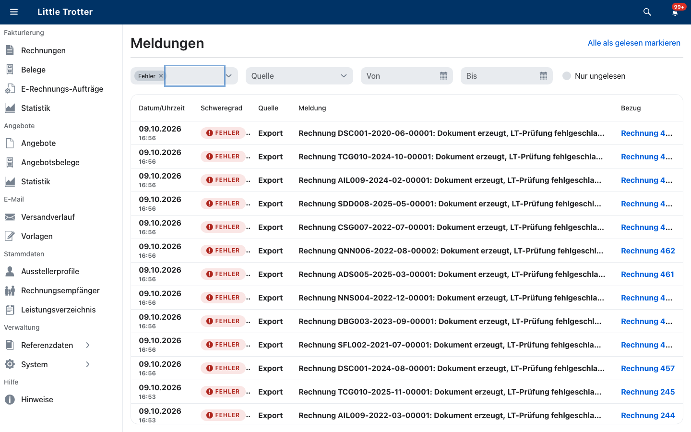
3. Stammdaten, Mandant und Empfängerverwaltung
Eine ordnungsgemäße Abrechnung im B2B-Umfeld verlangt zwingend verifizierte Unternehmensstammdaten sowohl für den Rechnungsaussteller als auch für den Leistungsempfänger.
3.1. Eigener Anbieterstamm mit Mehrfach-USt-IdNr. (Beliebige EU-Konstellationen am Beispiel Luxemburg)
Little Trotter X-Invoice erlaubt die flexible Verwaltung beliebig vieler EU-USt-IdNr.-Konstellationen. Dies ist speziell für deutsche Handwerker, Montagebetriebe, IT-Spezialisten und freiberufliche Dienstleister konzipiert, die in europäischen Nachbarländern (wie Luxemburg, Frankreich, Belgien, den Niederlanden oder Österreich) vor Ort direkte Leistungen erbringen und dort umsatzsteuerlich registriert sind:
-
Hauptsitz in Deutschland: Primäre deutsche Steuernummer und deutsche USt-IdNr. (
DE…). -
Beliebige EU-Zusatzregistrierungen: Direkte Erfassung zusätzlicher EU-USt-IdNr. (z. B.
LU…,FR…,BE…,NL…,AT…) unter . -
Praxisbeispiel Luxemburg (Werklieferungen und Montage vor Ort):
-
Führt ein deutscher Handwerks- oder Dienstleistungsbetrieb Arbeiten auf einer Baustelle oder Betriebsstätte in Luxemburg aus, verlagert sich der Ort der Leistung häufig nach Luxemburg (Ort der Belegenheit bzw. Tätigkeitsort).
-
Der Betrieb registriert sich bei der luxemburgischen Finanzverwaltung (Administration de l’enregistrement, des domaines et de la TVA) und erhält eine eigene
LU…-USt-IdNr. -
Mit Little Trotter rechnet der Betrieb solche Aufträge unmittelbar unter seiner luxemburgischen USt-IdNr. ab — inklusive korrekter lokaler Steuersätze (z. B. 17 % Regelsatz oder 3 % ermäßigt).
-
-
In der Grafik hervorgehobene Merkmale:
-
Aussteller-Erfassungsdialog mit Auswahlliste zur Länderauswahl (z. B.
LU - Luxemburg) und Eingabefeld für die ausländische USt-IdNr. -
Echtzeit-Syntaxvalidierung mit präziser Formathilfe (z. B. „USt-IdNr. passt nicht zum Format von LU. Beispiel: LU12345678“).
-
Skalierbare Mehrfachverwaltung über die Schaltfläche + USt-IdNr. hinzufügen.
-
-
Steuerung auf Belegebene: Beim Anlegen jeder einzelnen Rechnung entscheidet der Aussteller per Mausklick im Rechnungskopf, unter welcher seiner registrierten USt-IdNr. der Beleg ausgestellt und steuerlich deklariert wird.
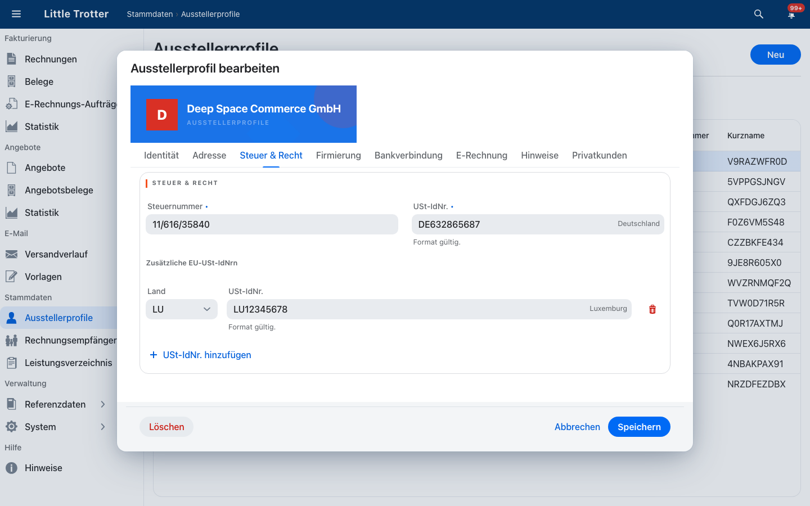
3.2. Geschäftspartner und Empfänger anlegen
Beim Anlegen eines Empfängers führt ein strukturierter Assistent durch alle relevanten Registerkarten:
-
Identität & Adresse: Kundenart (Unternehmen für B2B bzw. Privatperson für Verbraucher/B2C — steuert u. a. die automatische Aussteuerung der Privatkunden-Hinweise im Handwerk), Firmen- bzw. Personenname, Rechtsform, Anschrift nach postalischen Richtlinien.
-
Steuer & Recht: USt-IdNr., Steuernummer, Steuerbefreiungsgründe.
-
E-Rechnung: Leitweg-ID (BT-10), behördliche Käuferreferenz, elektronische Adressierung sowie Vorbelegung der Rechnungsart (Dokumentenfamilie Deutsch vs. International; für Empfänger außerhalb von DE/AT/CH wird automatisch „International“ vorausgewählt).
-
B2B-Profil & Lieferadresse: Zahlungskonditionen, Standard-Skonto, abweichende Lieferanschrift.
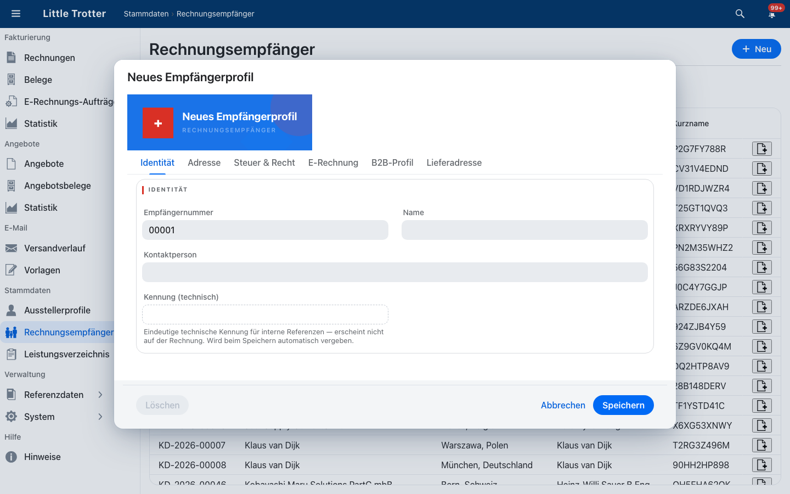
3.3. Rechnungsempfänger-Übersicht und Funktionen
Die Empfängerliste (/recipients) fasst alle aktiven Geschäftspartner mit ihren abrechnungsrelevanten Merkmalen zusammen:
-
Schnellfilter und Suchfeld: Sofortiges Auffinden von Kunden über Firmenname, Kundennummer oder Matchcode.
-
Statusanzeigen: Sichtbarkeit von VIES-Validierungsstatus, B2B-Profilzuordnung und hinterlegten Leitweg-IDs.
-
Aktionen: Direkter Absprung in die Stammdatenpflege oder Erstellung einer neuen Rechnung an den gewählten Empfänger.
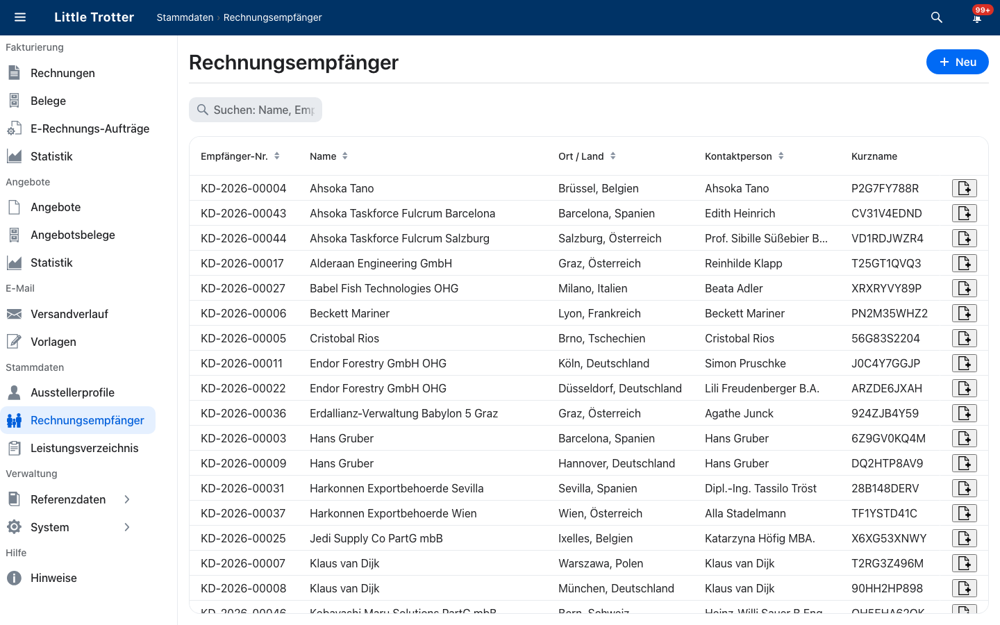
3.4. Integrierte USt-IdNr.-Prüfung (VIES) für DE und EU
Falsche oder erloschene Umsatzsteuer-Identifikationsnummern führen bei Betriebsprüfungen zu empfindlichen Steuernachforderungen. Little Trotter löst das mit einem einzigen Klick:
-
Sekundenschnelle Live-Abfrage: Direkte Prüfung deutscher (
DE…) und aller europäischen USt-IdNr. gegen das zentrale VIES-System der EU-Kommission — ohne Medienbruch, ohne externe Portale. -
Prävention statt Korrektur: Tippfehler und ungültige Nummern fliegen sofort bei der Stammdatenerfassung auf. Das verhindert zeitraubende Rechnungsstornos und Rückfragen von Kunden oder Finanzämtern.
-
Lückenlose Nachweiskette: Bestätigungs-ID und Zeitstempel der Abfrage werden automatisch mit dem Profil persistent gespeichert und protokolliert.
-
Vollständig kostenfrei: Direkte Anbindung an die offiziellen Behördenschnittstellen — dauerhaft ohne teure Abos oder Drittanbieter-Gebühren.
4. Leistungsverzeichnis, Artikelstamm und Branchen-Begrifflichkeiten
Das System passt sich über branchenspezifische Konfigurationen flexibel an unterschiedliche Berufsgruppen an.
4.1. Branchen-Begrifflichkeiten: Handwerk, Handel, Beratung
In den Systemeinstellungen (/system/einstellungen) lässt sich die Terminologie für Positionen global umschalten:
-
Handwerk: Waren heißen „Material“, Arbeitszeit heißt „Arbeitsstunde“.
-
Handel: Waren heißen „Artikel“, Leistungen heißen „Dienstleistung“. Beispiel: Die Position „Schreibtisch“ erscheint als „Artikel“ in Oberfläche und Excel-Export.
-
Beratung (Dienstleistung, z. B. Ingenieurbüros): Waren heißen „Produkt“, Leistungen heißen „Dienstleistung“. Beispiel: Eine Planungsstunde erscheint als „Dienstleistung“, eine Ware als „Produkt“.
Wesentliche Grundsätze der Umschaltung: * Wirkungsbereich: Die Einstellung beeinflusst ausschließlich die Benutzeroberfläche und den Excel-Export. * GoBD-Konformität: Gespeicherte Rechnungstexte, historische Buchungsdaten oder bereits erzeugte E-Rechnungsdokumente werden durch eine Profiländerung niemals rückwirkend modifiziert. * Sofortige Wirksamkeit: Änderungen werden ohne Serverneustart direkt in die laufende Mandantensitzung übernommen. * Einheitlicher Begriff „Dienstreise“: Der Begriff „Dienstreise“ bleibt in allen Profilen identisch.
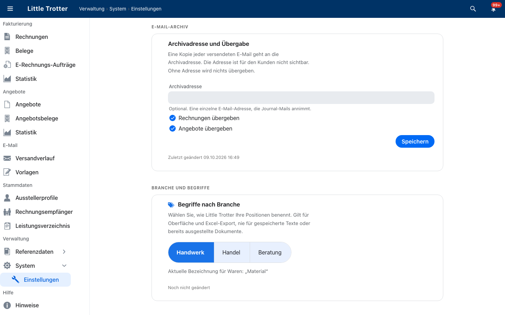
4.2. Rechnungen an Privatkunden (Handwerk)
Bei Rechnungen von Handwerksbetrieben an Privatpersonen (Verbraucher / B2C) greift in Little Trotter X-Invoice eine automatisierte Hinweisführung. Sie erfüllt die gesetzlichen Hinweispflichten des Handwerks und erleichtert dem privaten Auftraggeber die steuerliche Geltendmachung der Handwerkerleistung.
4.2.1. Fachlicher Hintergrund: Pflichtangabe und steuerlicher Kundennutzen
-
Gesetzlicher Aufbewahrungshinweis für Verbraucher: Führt ein Betrieb steuerpflichtige Werkleistungen oder sonstige Leistungen im Zusammenhang mit einem Grundstück aus (z. B. Bau-, Renovierungs-, Instandhaltungs- oder Gartenarbeiten an Haus, Wohnung oder Außenanlagen), sind private Auftraggeber gesetzlich verpflichtet, die Rechnung zwei Jahre lang aufzubewahren. Der leistende Handwerksbetrieb ist gesetzlich verpflichtet, auf diese zweijährige Aufbewahrungsfrist in der Rechnung hinzuweisen.
-
Steuerliche Geltendmachung (Steuerbonus für Handwerkerleistungen): Privatkunden können Handwerkerleistungen für Renovierungs-, Erhaltungs- und Modernisierungsmaßnahmen im eigenen Haushalt im Rahmen ihrer Einkommensteuererklärung steuermindernd geltend machen. Begünstigt sind ausschließlich die reinen Arbeits-, Fahrt- und Maschinenkosten zzgl. Umsatzsteuer (keine Materialkosten), vorausgesetzt die Begleichung erfolgt unbar per Banküberweisung. Der Hinweistext informiert den Kunden über diese Möglichkeit.
4.2.2. Automatische Aktivierung und Abrechnungsregeln
Der Hinweis für Privatkunden wird beim Erstellen einer Rechnung automatisch in den Belegkopf übernommen, wenn folgende drei Kriterien gleichzeitig erfüllt sind:
-
Das globale Wording-Profil des Systems steht auf Handwerk (Voreinstellung).
-
Der ausgewählte Rechnungsempfänger ist als Privatperson (
CONSUMER) angelegt. -
In den Stammdaten des Rechnungsausstellers ist der Schalter „Hinweis für Privatkunden drucken“ aktiviert.
|
Hinweis
|
In den Wording-Profilen Handel und Beratung (Dienstleistung) sowie bei Rechnungen an gewerbliche Kunden (Unternehmen / B2B) wird dieser Hinweis nicht generiert. Dort steht der reguläre Hinweistext für individuelle Anmerkungen zur Verfügung. |
4.2.3. Stammdatenpflege am Rechnungsaussteller
Die mandantenweite Konfiguration erfolgt unter (dieser Reiter ist nur sichtbar, wenn das Wording-Profil auf „Handwerk“ steht):
-
Schalter „Hinweis für Privatkunden drucken“: Vorgegeben aktiv. Deaktiviert den Andruck auf allen künftigen Privatkunden-Rechnungen, falls gewünscht.
-
Textvorlagen nach Dokumentsprache: Für Deutsch und International (Englisch) kann jeweils ein individueller Hinweistext hinterlegt werden.
-
System-Standardtexte: Bleiben die Textfelder leer, setzt das System automatisch die folgenden praxiserprobten Standardformulierungen ein:
-
Deutsch: „Bitte bewahren Sie diese Rechnung zwei Jahre auf. Die enthaltenen Arbeits-, Maschinen- und Fahrtkosten können Sie bei Ihrer Steuererklärung angeben.“
-
International: „Please keep this invoice for two years. You can state the labour, machine and travel costs it contains in your tax return.“
-
4.2.4. Bearbeitung im Belegentwurf (Rechnungskopf)
Beim Erstellen einer neuen Rechnung an einen Privatkunden wird der Hinweistext als Kopie in den Belegkopf übernommen (Status: Anbieter-Standard):
-
Manuelle Anpassung und Betragsaufteilung: Das Textfeld im Kopf-Formular kann vor dem Festschreiben frei editiert werden. Da das System Lohn- und Materialanteile nicht automatisch trennt, kann der Handwerker den konkreten Lohnanteil hier bei Bedarf manuell ergänzen (Beispiel: „Bitte bewahren Sie diese Rechnung zwei Jahre auf. Darin enthaltene Arbeits- und Fahrtkosten: 480,00 EUR netto zzgl. 19 % USt. Diese Kosten können Sie bei Ihrer Steuererklärung angeben.“).
-
Schaltfläche Auf Standard zurücksetzen: Setzt einen manuell modifizierten Text wieder auf den in den Anbieterstammdaten hinterlegten Wortlaut zurück.
-
Dynamischer Adressatenwechsel: Wird der Rechnungsempfänger im Entwurf von einer Privatperson auf eine Firma umgestellt, wird der Privatkunden-Hinweis automatisch entfernt (solange er unverändert auf dem Standard basierte). Umgekehrt wird er automatisch eingefügt, wenn von einer Firma auf einen Privatkunden gewechselt wird. Wurde der Text bereits manuell angepasst, bleibt er bei Adressatenwechseln erhalten.
4.2.5. Beleg-PDF und E-Rechnungsdatensatz (DIN 5008 / XML)
-
DIN 5008 PDF-Druck: Der Privatkunden-Hinweis wird als eigenständiger Absatz in der formatierten „HINWEIS“-Box unterhalb des normalen Hinweistextes angedruckt. Ist kein normaler Hinweistext vorhanden, bildet der Privatkunden-Hinweis den alleinigen Inhalt der Box.
-
E-Rechnung (Factur-X / ZUGFeRD / XRechnung): Der Hinweis wird als standardkonforme Rechnungsnotiz (
BT-22) in das strukturierte Rechnungs-XML eingebunden und passiert die amtliche KoSIT-Validierung ohne Beanstandungen. -
Unveränderbarkeit und Storno: Sobald die Rechnung festgeschrieben ist (
SENT), ist der Hinweistext dauerhaft unveränderbar fixiert. Bei einem Rechnungskorrekturbeleg (Storno, Typ 384) wird der Hinweis automatisch und identisch aus der Originalrechnung übernommen.
4.3. Rechnungen ins Ausland
Die Dokumentsprache einer Rechnung ist Deutsch oder International (Englisch). Ein neuer Empfänger erhält die Sprache nach seinem Land: Deutschland, Österreich, Schweiz und Liechtenstein sind Deutsch, alle anderen Länder International.
-
Eine Rechnung auf „International“ umstellen können Sie im Belegkopf und im Reiter E-Rechnung nur, wenn der Aussteller eine ausländische USt-IdNr.-Registrierung hat oder die Rechnung mit Reverse Charge erstellt wird. Sonst bleibt „Deutsch“ fest.
-
Die Sprache betrifft das PDF. Das XML-Exportprofil (ZUGFeRD, XRechnung) bleibt in beiden Sprachen gleich.
-
Zur Steuerschuldumkehr bei Kunden im EU-Ausland siehe Internationale Rechnungen, Rechnungsarten und Steuerschuldumkehr (Reverse Charge).
5. Angebote (Alpha)
|
Warnung
|
Entwicklungsstand: Alpha-Stadium |
Das Angebotsmodul (kotlin-quote) stellt die strukturierte Erfassung von Leistungsangeboten vor der eigentlichen Rechnungsstellung bereit. Es umfasst die Angebotsverwaltung samt Nummernkreis, PDF/A-3-Generierung (Typst-Engine), optionale UBL-2.1-Quotation-XML-Einbettung, E-Mail-Versand über das E-Mail-Modul, wiederverwendbare Angebotsbelege sowie die kontrollierte Übernahme angenommener Angebote in Rechnungsentwürfe.
5.1. Lebenszyklus eines Angebots
Ein Angebot durchläuft eine deterministische Zustandsmaschine mit sieben klar abgegrenzten Status:
-
Entwurf (
DRAFT): Das Angebot wird angelegt und erhält dabei seine lückenlose Angebotsnummer; Empfänger, Kopftexte, Zahlungsbedingungen, Positionen und Belege werden erfasst. Alle Felder sind frei bearbeitbar. -
In Prüfung (
REVIEW): Mit der Aktion Zur Prüfung wird das Angebot formal und rechnerisch geprüft. Der Inhalt ist für Änderungen gesperrt. Bei Korrekturbedarf kann das Angebot mit Zurück an Entwurf unter Angabe eines Hinweises zurückgegeben werden. -
Versendet (
SENT): Der Versand erfolgt in zwei Schritten. Zuerst erzeugt Versandexemplar erstellen das finale Versandexemplar (PDF/A-3 ohne Entwurfsmarkierung); während der Erzeugung zeigt eine Statuszeile die verstrichenen Sekunden. Sobald das Exemplar vorliegt, wird E-Mail senden aktiv und übergibt es an das E-Mail-Modul; vorher ist die Schaltfläche deaktiviert und ihr Tooltip nennt den ersten fehlenden Punkt (Exemplar fehlt oder wird noch erzeugt, Exemplar veraltet, Empfänger ohne E-Mail-Adresse). Der Status wechselt erst nach erfolgreichem Versand. -
Angenommen (
ACCEPTED): Der Kunde hat das Angebot angenommen. Mit Annehmen werden Annahmedatum und optional die Bestellnummer des Empfängers erfasst (terminaler Status). Eine daraus erstellte Rechnung steht im Rechnungsauftrag und im Protokoll; der Status bleibt. -
Abgelehnt (
REJECTED): Der Kunde hat das Angebot abgelehnt. Mit Ablehnen wird ein verpflichtender Ablehnungsgrund im Protokoll erfasst (terminaler Status). -
Annulliert (
CANCELLED): Vor dem Versand kann ein Angebot ausDRAFToderREVIEWunter Angabe eines Pflichtgrundes annulliert werden (terminaler Status).
| Status | Bedeutung | Zulässige Folgeaktionen |
|---|---|---|
|
Neu angelegtes Angebot mit vergebener Angebotsnummer, frei editierbar. |
Bearbeiten, Zur Prüfung, Annullieren |
|
Inhalt schreibgeschützt. |
Versandexemplar erstellen, E-Mail senden, Zurück an Entwurf, Annullieren |
|
Versand erfolgreich abgeschlossen. |
Annehmen, Ablehnen (Grund Pflicht), Rechnungsentwurf erstellen |
|
Vom Kunden bestätigt (terminal). |
Rechnungsentwurf erstellen, Verknüpfung zur erstellten Rechnung öffnen |
|
Vom Kunden abgelehnt (terminal). |
Keine Folgeaktionen; Historie im Protokoll einsehbar. |
|
Vor dem Versand verworfen (terminal). |
Keine Folgeaktionen. |
Im Status In Prüfung erstellt Versandexemplar erstellen zuerst das finale Dokument; sobald es bereitsteht, ist E-Mail senden aktiv:
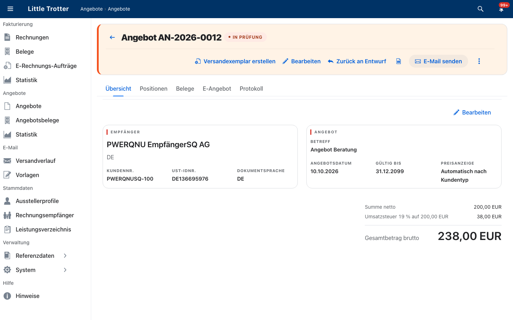
5.2. Menüstruktur und Navigation
Ist das Modul bereitgestellt und in den Einstellungen aktiviert, erscheint in der Seitennavigation die Hauptsektion Angebote:
-
Angebote (
/quotes): Zentrale Übersicht mit Schnellfiltern nach Status (Entwurf,In Prüfung,Versendet,Angenommen,Abgelehnt,Annulliert), Textsuche nach Nummer, Empfänger und Betreff sowie Summenausweis. -
Angebotsbelege (
/quote-receipt-pool): Bibliotheksverwaltung für wiederkehrende Standardanlagen. -
Statistik (
/quotes/statistics): Kaufmännische Kennzahlen und Trendanalysen zu Angebotsvolumen, Durchlaufzeiten und Statusverteilungen.
5.3. Detailansicht und Cockpit-Reiter
Die Detailansicht eines Angebots gliedert sich in fünf spezialisierte Reiter:
-
Übersicht: Stammdaten des Empfängers (Adresse, Kundennummer, USt-IdNr., Dokumentsprache), Angebotsdaten (Datum, Gültigkeit, Preisanzeige, Betreff, Referenzen), Statusinformationen (Annahmedatum, Bestellnummer, Ablehnungsgrund, verknüpfte Rechnungsnummer) und der typografische Summenblock (Netto, Umsatzsteuer nach Sätzen, Brutto).
-
Positionen: Schreibgeschützte Tabelle aller Leistungspositionen mit Einzelpreisen, Mengen, Einheiten, Steuersätzen und Positionsnetto.
-
Belege: Übersicht aller dem Angebot oder einzelnen Positionen zugeordneten Dokumente. Unterschieden wird zwischen:
-
Intern (
INTERNAL): Kalkulationen und interne Vermerke, die das Unternehmen nicht verlassen. -
Für den Empfänger (
CUSTOMER): Leistungsbeschreibungen, Skizzen und Datenblätter, die dem Kunden als Anhang übermittelt werden.
-
-
E-Angebot: Verwaltung der generierten Belegdokumente:
-
Auftragstabelle: laufende Nummer (Nr.), Dokumenttyp (PDF oder PDF + XML), Status (
In Arbeit,Bereit,Fehlgeschlagen), Zeitstempel, Download und Validierungsbericht. Der Stand erscheint als Status-Chip (Entwurfbzw.Prüfung); das finale Versandexemplar trägt keinen Stand-Chip. -
E-Angebot erzeugen: Stößt die Generierung des aktuellen Stands passend zum Bearbeitungsstatus an.
-
Anzeige: PDF wird im Browser geöffnet, XML-Daten können heruntergeladen werden.
-
-
Protokoll: Lückenloses, manipulationssicheres Verlaufsprotokoll aller Statuswechsel, Versendungen, Belegänderungen, Rechnungsbezüge sowie freier Notizen.
5.4. Angebotsbelege (Standardanlagen-Bibliothek)
Die Ansicht Angebotsbelege (/quote-receipt-pool) verwaltet wiederkehrende Unterlagen wie Allgemeine Geschäftsbedingungen (AGB), Leistungsbeschreibungen, Sicherheitsdatenblätter oder Zertifikate:
-
Versionierung: Belege werden in unveränderlichen Fassungen geführt. Ändert sich ein Dokument, wird eine neue Fassung hochgeladen.
-
Gültigkeit ab: Fassungen können mit einem Gültigkeitsdatum versehen werden.
-
Unveränderlichkeit: Bestehende Angebote behalten exakt die Fassung, die zum Zeitpunkt der Zuordnung aktuell war. Bei Vorliegen einer neueren Fassung weist das System im Angebot darauf hin und ermöglicht die gezielte Aktualisierung.
-
Archivierung: Nicht mehr genutzte Standardbelege können archiviert werden; bestehende Verknüpfungen bleiben vollständig erhalten.
5.5. Übernahme in einen Rechnungsentwurf
Die Überführung eines Angebots in die Fakturierung erfolgt kontrolliert über Rechnungsentwurf erstellen (aus dem Status ACCEPTED oder direkt aus SENT unter impliziter Annahme):
-
Dialog: Erfassung des Leistungszeitraums (von / bis).
-
Beauftragung: Ein asynchroner Rechnungsauftrag wird an das Fakturierungsmodul übermittelt.
-
Ergebnis: Das System erzeugt einen vollwertigen Rechnungsentwurf mit gezogener Rechnungsnummer. Sämtliche Positionen, kundenbezogene Artikelnummern, B2B-Kopffelder (
BT-10,BT-13), Angebotsbelege sowie das Angebots-PDF als Beleg werden automatisch übernommen. -
Verknüpfung: Der Rechnungsauftrag und das Protokoll des Angebots verweisen auf die neu erstellte Rechnung; der Status des Angebots bleibt
ACCEPTED.
5.6. Aufbewahrung versendeter Angebote
Versendete Angebote gehen wie Rechnungen als Kopie in das E-Mail-Archiv, solange in den Einstellungen der Schalter „Angebote übergeben“ an ist (siehe Leitfaden Archivübergabe). Bewahren Sie Angebote wie Rechnungen acht Jahre auf; dann gilt im Archiv für alle Belege dieselbe Frist. Für Angebote kann eine kürzere Mindestfrist gelten. Ob Sie davon Gebrauch machen, klären Sie mit Ihrer Steuerberatung.
5.7. Einstellungen und Nummernkreise
-
Einstellungen („System → Einstellungen“):
-
Schalter „Angebote“: Aktiviert oder deaktiviert das Modul zur Laufzeit. Deaktiviert bleibt der Datenbestand unberührt, Routen und Navigation werden ausgeblendet.
-
Gültigkeit neuer Angebote (Tage): Standardgültigkeitsdauer in Kalendertagen für neu erfasste Angebote.
-
Maschinenlesbare Daten im PDF: Wahl zwischen Keine oder UBL 2.1 zur Einbettung von XML-Daten nach UBL-Quotation in das PDF/A-3.
-
-
Nummernkreise („Stammdaten → Referenzdaten → Nummernkreise“):
-
Subjekt Angebot: Verwaltet Präfix, Datumsformat und Zählerbreite (Standard:
AN-JJJJ-NNNN). Der lückenlose Zähler wird im Angebotsmodul geführt.
-
5.8. Artikel- und Materialverwaltung mit Kunden-Artikelnummer (BT-156)
Im Leistungsverzeichnis werden Standardartikel, Honorare und Dienstleistungen vordefiniert:
-
Artikelnummer, EAN/GTIN, Matchcode und Bezeichnung.
-
Standard-Einheit (z. B.
HURfür Stunden,DAYfür Tage,C62für Stück). -
Umsatzsteuersatz (19 %, 7 %, 0 % oder steuerbefreit) sowie länderspezifische USt-Varianten.
-
Kunden-Artikelnummern (BT-156 / Buyer Item Identification): Jedem Artikel können empfängerspezifische Artikelnummern und Bezeichnungen hinterlegt werden. Bei Rechnungsstellung an den betreffenden Kunden werden dessen interne Bestellnummern automatisch in die E-Rechnung übernommen.
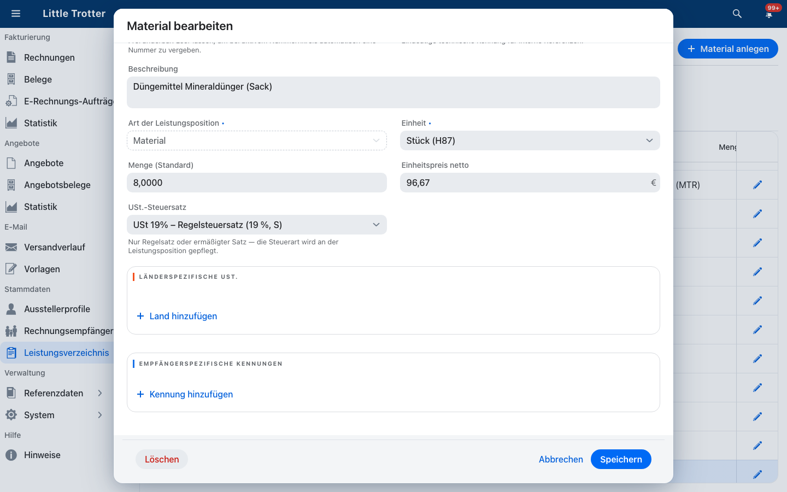
6. Rechnungsübersicht und Excel-Export
Die zentrale Rechnungsübersicht bietet einen vollständigen Überblick über sämtliche Dokumente im Arbeitsvorrat.
6.1. Such-, Filter- und Aktionsfunktionen
-
Schnellfilter: Filtern nach Entwürfen (
DRAFT), freigegebenen Rechnungen (SENT) oder Stornobelegen. Zahlungseingänge verfolgt Little Trotter nicht; das erledigt Ihre Buchhaltung. -
Tabellenlayout: Rechnungsnummer, Empfänger, Rechnungsdatum, Fälligkeit, Netto-, Steuer- und Bruttobetrag, aktueller Bearbeitungsstatus.
-
Direktaktionen: Bearbeiten, Duplizieren, E-Rechnung erzeugen, Stornieren (Typ 384).
6.2. Kaufmännischer Excel-Export
Das System unterscheidet zwei Exportmodi für Tabellenkalkulationen und nachgelagerte Buchhaltungssysteme:
6.2.1. Modus B: Export aller Rechnungen (Listenexport)
Über das Download-Symbol in der Symbolleiste der Rechnungsliste (/) wird der Sammel-Export geöffnet. Der Dialog friert den aktuellen Filterzustand und die Trefferanzahl zum Klickzeitpunkt ein:
-
Formatoptionen:
-
Excel-Arbeitsmappe (
.xlsx): Enthält drei Tabellenblätter (Export-Metadaten,Rechnungen-Kopfdaten undPositionenaller selektierten Rechnungen). -
CSV-Positionsdatei (
.csv): Flache Textdatei mit sämtlichen Rechnungspositionen der gefilterten Belege für automatisierte Importe.
-
-
Filtertreue: Exportiert exakt die im Filter ausgewählten Belege (oder den gesamten Datenbestand ohne Filterung).
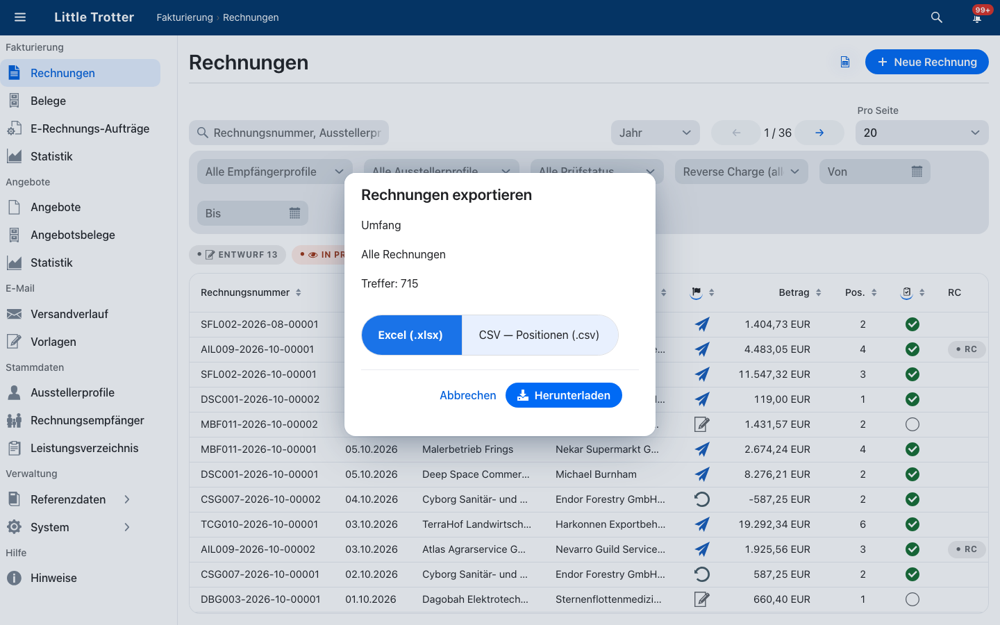
6.2.2. Modus A: Export einer Einzelrechnung mit Positionen und Journal
In der Rechnungsdetailansicht (/invoices/{id}) steht in der Aktionsleiste ein direkter Excel-Export-Button zur Verfügung:
-
Umfang der Arbeitsmappe (
.xlsx):-
Tabellenblatt
Export: Metadaten, Rechnungsnummer, Exportzeitstempel und angewandte Selektion. -
Tabellenblatt
Rechnung: Vollständige Kopfdaten, Aussteller, Empfänger, Zahlungskonditionen und Steuerkategorien. -
Tabellenblatt
Positionen: Detaillierte Auflistung sämtlicher Positionen (Artikelnummer, Menge, Einheit, Einzelpreis, Steuersatz, Rabatt und Nettobetrag). -
Tabellenblatt
Journal: Änderungshistorie der Rechnung (Statuswechsel, Zeitstempel, Nutzerkonto).
-
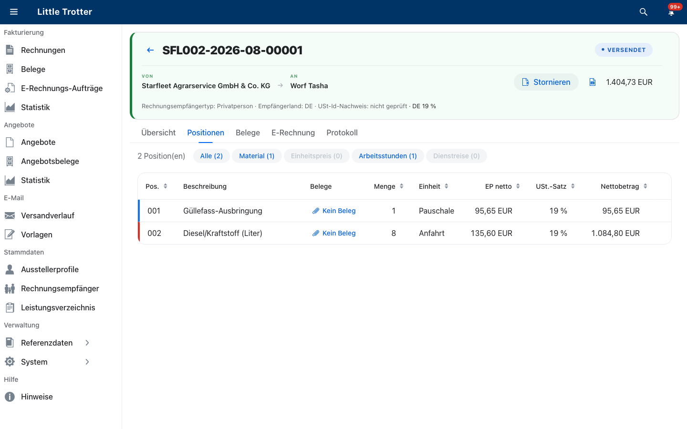
7. Rechnungskopf und Steuerschuldumkehr (Reverse Charge)
7.1. Erfassung einer B2B-Rechnung
Beim Erstellen einer B2B-Rechnung werden im Kopfbereich die steuerlichen und rechtlichen Rahmenbedingungen festgelegt:
7.1.1. Wesentliche Rahmendaten im Belegkopf
-
Parteien und Nummernkreis: Auswahl des Ausstellers (inkl. zutreffender USt-IdNr.) und des Empfängers.
-
Rechnungsdaten: Belegdatum, Leistungszeitraum / Lieferdatum, Zahlungsziel.
-
Währung und Leitweg-ID: Währung (Standard EUR) sowie behördliche Leitweg-ID bei öffentlichen Stellen (B2G).
-
Hinweise und Mitteilungen: Allgemeiner Hinweistext sowie bei Privatkunden im Handwerk der spezifische Privatkunden-Hinweis (Aufbewahrungs- und Steuerhinweis) inklusive Schaltfläche zum Zurücksetzen auf den Anbieter-Standard.
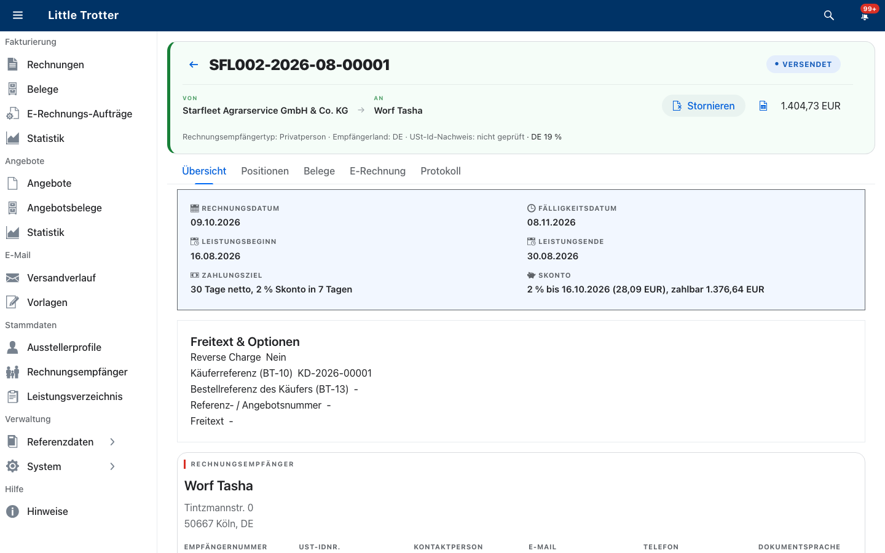
7.2. E-Rechnungsangaben erfassen
Die Angaben für die E-Rechnung werden im Bearbeitungsdialog einer Rechnung erfasst (Bearbeiten auf der Übersicht, dann Reiter E-Rechnung). Das farbige Quadrat am Reiter zeigt, ob alle Pflichtangaben vollständig sind.
7.2.1. Aufbau des Reiters
-
Referenzen: Käuferreferenz (
BT-10, bei öffentlichen Stellen meist die Leitweg-ID), Bestellreferenz der Einkaufsseite (BT-13), Referenz- bzw. Angebotsnummer (BT-15), Angebotsdatum und die eigene USt-IdNr., unter der die Rechnung ausgestellt wird. -
Format: Rechnungsart (Sprache) und die Zusatzfelder des B2B-Profils, das dem Rechnungsempfänger zugeordnet ist (z. B. Projektnummer
BT-11). -
Vorbelegung: Die Käuferreferenz wird aus dem Empfängerprofil vorgeschlagen und lässt sich über das Stift-Symbol je Rechnung überschreiben. Ist im Ausstellerprofil eine USt-Registrierung im Land des Empfängers hinterlegt, ist sie automatisch vorausgewählt.
-
Rechnungsart: Steuert das Text- und Layout-Set des PDF-Dokuments (Deutsch vs. International). Ohne aktive USt-IdNr.-Registrierung im Ausland oder Reverse Charge bleibt die Rechnungsart zum Schutz vor Formfehlern auf Deutsch festgelegt.
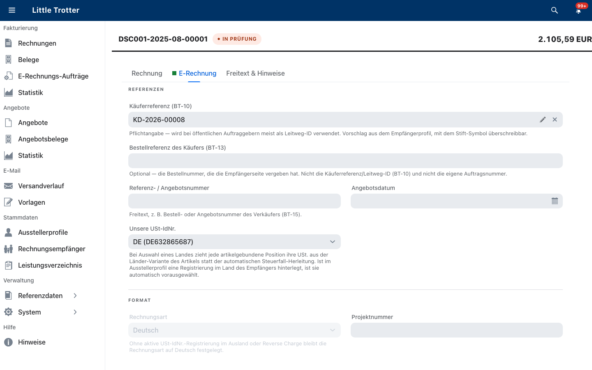
7.3. Internationale Rechnungen, Rechnungsarten und Steuerschuldumkehr (Reverse Charge)
Little Trotter X-Invoice unterstützt die grenzüberschreitende Fakturierung im europäischen Binnenmarkt sowie in Drittländer über ein integriertes Zusammenspiel aus Rechnungsart, Steuerkategorien, USt-IdNr.-Validierung und normkonformen EN-16931-XML-Profilen.
7.3.1. Rechnungsarten (Dokumentenfamilie Deutsch vs. International)
Das System trennt systematisch zwischen dem visuellen Rechnungsformat des PDF-Dokuments und dem maschinenlesbaren XML-Exportprofil:
-
Rechnungsart „Deutsch“:
-
Klassischer Aufbau nach DIN 5008 mit vollständigen deutschen handels- und gesellschaftsrechtlichen Pflichtangaben (Rechtsform, Registergericht, Handelsregisternummer, inländische Steuernummer, deutsches Bankkonto/Zahlungsziel).
-
Vorgesehen für das inländische B2B- und B2G-Geschäft.
-
-
Rechnungsart „International“:
-
Internationalisiertes, englischsprachiges Formularlayout nach europäischen Normvorgaben (Bezeichnungen wie Invoice, Seller, Buyer, Invoice Date, Due Date, Tax Summary).
-
Befreit von rein deutschen Inlandsfloskeln; optimiert für ausländische Buchhaltungsabteilungen und ERP-Eingangsprüfungen.
-
-
Schutzlogik und Freischaltung (
isInvoiceFormatEditable):-
Bei rein inländischen Rechnungen bleibt die Rechnungsart fest auf „Deutsch“ fixiert, um versehentliche Formfehler bei der Vorsteuerprüfung des Rechnungsempfängers auszuschließen.
-
Die Umschaltung auf „International“ wird im Belegkopf und im Reiter E-Rechnung freigeschaltet, sobald entweder eine ausländische USt-Registrierung des Ausstellers (z. B.
LU…) aktiv ist oder die Rechnung alsReverse Chargegekennzeichnet wird.
-
-
Automatisierte Vorbelegung beim Empfänger:
-
In den Stammdaten (
/recipients) schlägt das System anhand des Empfängerlandes automatisch die passende Rechnungsart vor: Empfänger in Deutschland, Österreich, der Schweiz und Liechtenstein erhalten standardmäßig die Rechnungsart „Deutsch“, alle übrigen Staaten erhalten automatisch die Rechnungsart „International“.
-
7.3.2. Grundsätze des Reverse-Charge-Verfahrens (EU-Binnenmarkt)
Bei grenzüberschreitenden B2B-Lieferungen und -Leistungen innerhalb der EU greift die Steuerschuldumkehr (Reverse Charge) nach nationalem Umsatzsteuerrecht bzw. Art. 196 MwStSystRL:
-
Automatischer Steuersatz: Alle Rechnungspositionen werden automatisch mit 0 % USt ausgewiesen und der normierten Steuerkategorie
AE(Reverse Charge) zugeordnet. -
Pflichtvermerk (BT-120): Der gesetzlich vorgeschriebene Vermerk „Steuerschuldnerschaft des Leistungsempfängers / Reverse Charge“ wird automatisch im Beleg-Freitext und als normiertes Feld im XML verankert.
-
Live-Validierung über VIES: Das System führt einen automatisierten Online-Abgleich der ausländischen USt-IdNr. des Geschäftspartners über das VIES-System der EU-Kommission durch und dokumentiert die Gültigkeit direkt im Belegcockpit („USt-Id-Nachweis: bestätigt“).
-
In der Belegansicht hervorgehobene Merkmale:
-
Kopfleiste: Transparente Signalisierung von Empfängerland, VIES-Status und Reverse-Charge-Status (z. B. „Empfängerland: PL · USt-Id-Nachweis: bestätigt · Reverse Charge“).
-
Freitext & Optionen: Automatisch generierter Hinweistext zur Steuerschuldnerschaft.
-
Käuferreferenz (BT-10): Strukturierte Einbettung der kaufmännischen oder behördlichen Referenz des Kunden.
-
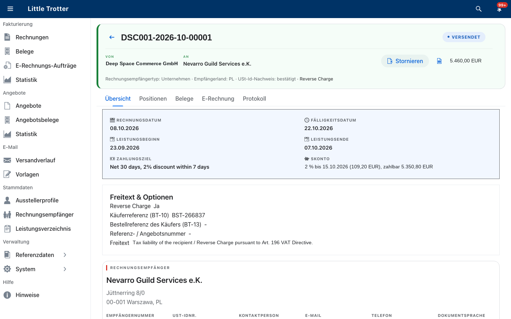
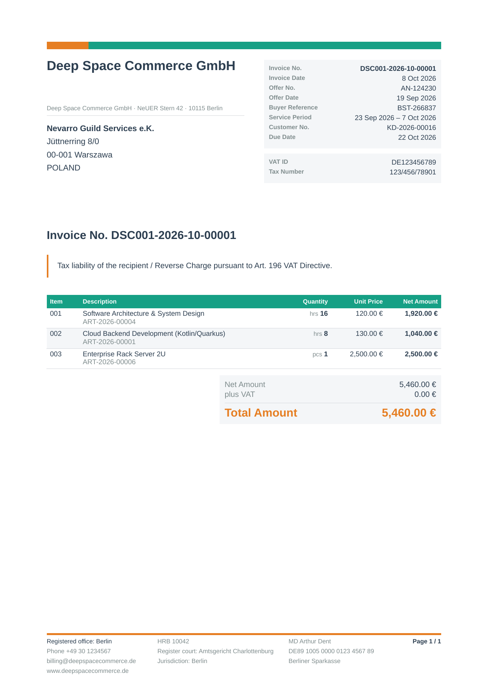
7.3.3. Grenzüberschreitende Einsätze bei europäischen Nachbarn (Mehrfach-USt-IdNr. und Betriebsstätten)
Viele Handwerksbetriebe, Bauunternehmen und spezialisierte Dienstleister aus Grenzregionen erbringen direkte Leistungen bei Kundschaft in europäischen Nachbarländern (z. B. in Luxemburg, Frankreich, Belgien, den Niederlanden, Österreich oder Polen). Little Trotter X-Invoice erlaubt hierfür die flexible Verwaltung beliebiger EU-Umsatzsteuerkonstellationen innerhalb eines einzigen Mandantenprofils:
-
Praxisbeispiel: Deutscher Betrieb mit luxemburgischer USt-IdNr. (
LU…):-
Ein in Deutschland ansässiger Handwerks- oder Dienstleistungsbetrieb registriert sich für Montagen oder Vor-Ort-Aufträge in Luxemburg umsatzsteuerlich und erhält eine luxemburgische USt-IdNr.
-
Im Ausstellerprofil werden die primäre deutsche (
DE…) und die zusätzliche luxemburgische Identifikationsnummer (LU…) parallel hinterlegt. -
Bei der Belegrechnung wählt die ausstellende Seite im Rechnungskopf mit einem Klick das jeweils zutreffende Registrierungsland.
-
-
Fallunterscheidung nach Leistungsort:
-
Lokale Leistung im Nachbarland (z. B. LU → LU): Erfolgt die Leistung vor Ort an Kundschaft im selben Nachbarland, rechnet der Betrieb über seine lokale USt-IdNr. ab. Es gelten die landesspezifischen Steuersätze (z. B. luxemburgische TVA mit 17 %, 14 %, 8 % oder 3 %) statt 0 % Reverse Charge.
-
Innergemeinschaftliche B2B-Leistung (z. B. DE → AT/FR oder LU → DE): Wird grenzüberschreitend an ein vorsteuerabzugsberechtigtes EU-Unternehmen fakturiert, greift das Reverse-Charge-Verfahren (Steuerschuldnerschaft der Leistungsempfängerseite mit 0 % Steuerausweis).
-
-
Nachweisunterstützung:
-
Zwei-Länder-Ausweis im Rechnungs-XML: Sowohl die ausländische USt-IdNr. des Ausstellers als auch die Identifikationsnummer des Empfängers werden normkonform nach EN 16931 in die elektronische Rechnung eingebettet (BT-31/32 bzw. BT-48/49).
-
Automatische VIES-Validierung: Das System prüft die Gültigkeit der beteiligten USt-IdNr. (DE und EU) automatisiert und dokumentiert den Bestätigungsstatus im Beleg.
-
7.3.4. Fakturierung in Drittländer (außerhalb der EU / Export)
Bei Rechnungen an Geschäftspartner in Drittstaaten (z. B. Schweiz, Großbritannien, USA):
-
Steuerbehandlung: Steuerfreie Ausfuhrlieferung bzw. nicht im Inland steuerbare Leistung (je nach Leistungsort).
-
Dokumentenfassung: Einsatz der Rechnungsart „International“ zur Gewährleistung barrierefreier Rechnungsprüfung bei internationalen Kunden.
-
Normierte Identifikatoren: Automatische Übernahme internationaler Unternehmens- oder Umsatzsteueridentifikationsnummern in die strukturierten EN-16931- und Factur-X-Container.
8. Positionserfassung und Dienstreisen
8.1. Position anlegen
Rechnungspositionen können manuell eingegeben oder direkt aus dem hinterlegten Materialkatalog übernommen werden:
-
Materialauswahl und BT-154: Übernahme von Artikeltext, Einheit und Standard-Einzelpreis.
-
Mengen- und Rabattstaffel: Eingabe von Menge, Einzelpreis und optionalem Positionsrabatt in Prozent oder Festbetrag.
-
Umsatzsteuersatz: Automatische Vorbelegung aus Artikelstamm bzw. Kopfkonfiguration.
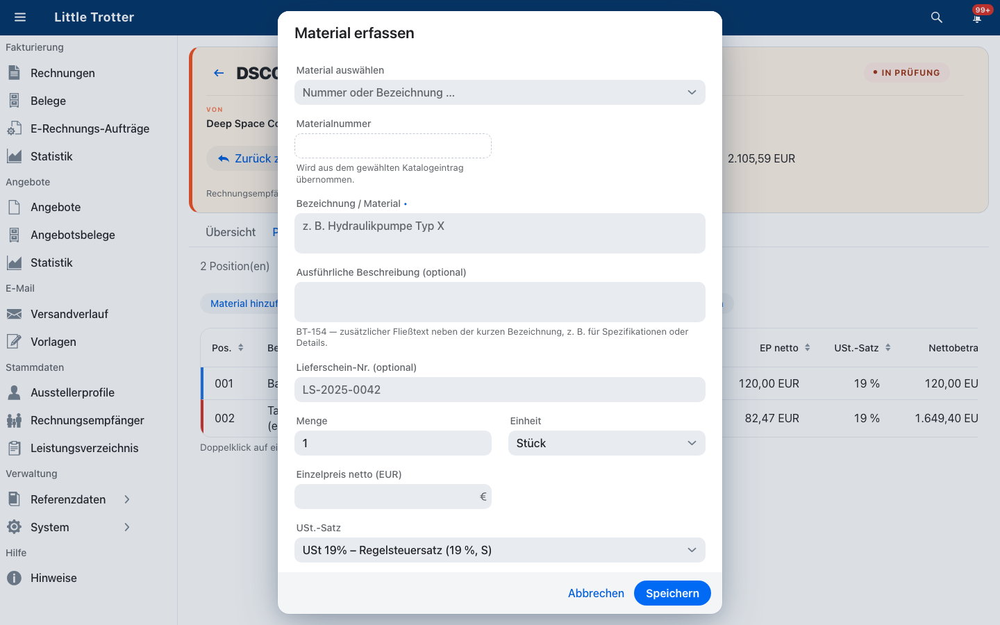
8.2. Dienstreisen und Reisekostenabrechnung
Für beratende und projektbezogene Dienstleistungen bietet das System eine strukturierte Reisekostenabrechnung nach ADR-021:
-
Reisedaten: Reiseziel, Reisezweck, Reisebeginn und Reiseende.
-
Reisebausteine:
-
Fahrtkosten: Bahnfahrkarten, Flugtickets, Kilometerpauschalen.
-
Unterkunft: Hotelrechnungen mit Ausweisung von Beherbergung und Frühstück.
-
Verpflegungsmehraufwand (VMA): Standardisierte Tagessätze nach Abwesenheitsdauer.
-
-
Belegverknüpfung: Direkte Zuordnung von Einzelquittungen aus dem Belegpool.
-
Normkonforme Bündelung: Eine Dienstreise wird im Rechnungsdokument und im XML (EN 16931) als genau eine Position (BG-25) geführt. Die steuerliche Behandlung folgt als Nebenleistung der Hauptleistung der Rechnung.
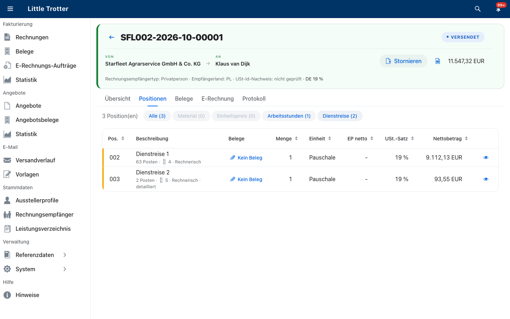
8.3. Positionen ohne Belegnachweis
Leistungsverzeichnisse können Positionen enthalten, für die keine Belegnachweise erforderlich sind (z. B. vereinbarte Pauschalen oder Honorare):
-
Übersichtliche, strukturierte Tabellendarstellung aller Positionen.
-
Kennzeichnung von Positionen ohne Belegnachweis mit dem Statusabzeichen „Kein Beleg“.
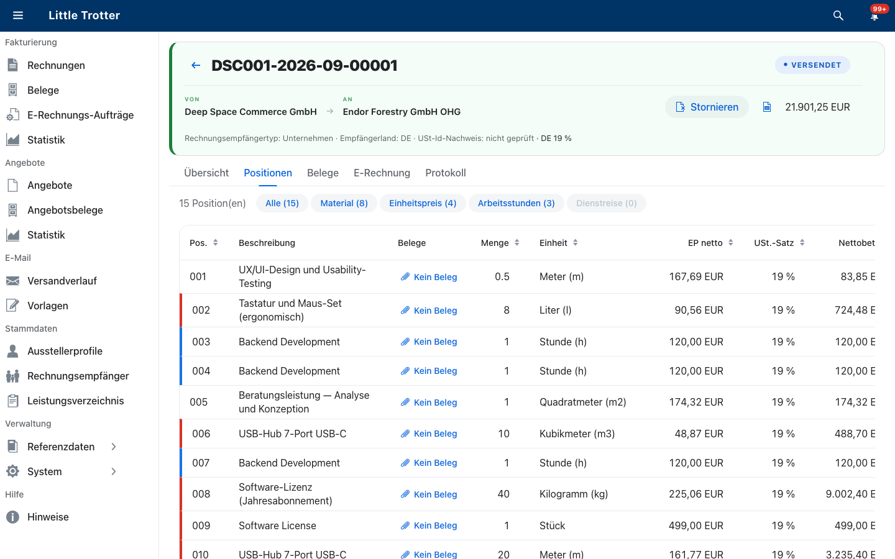
9. Belegverwaltung, Belegbudget und Belegpool
9.1. Zentraler Belegpool
Der Belegpool (/receipt-pool) dient als zentrale Sammelstelle für alle buchhalterischen Nachweisdokumente:
-
SHA-256-Deduplizierung: Verhindert die Mehrfachspeicherung identischer Belegdateien.
-
Statusverfolgung: Zeigt an, welche Belege bereits Rechnungen zugeordnet sind und welche noch ungebunden im Pool liegen.
-
Vorschau: Schnelle Voransicht der hochgeladenen PDF-Belege (der Pool nimmt derzeit ausschließlich PDF an).
-
Arbeitsmaterial, kein Archiv: Der Pool hält die Fassung, die in Rechnungen eingebettet wird; Originalbelege verbleiben in Ihrer Buchführung.
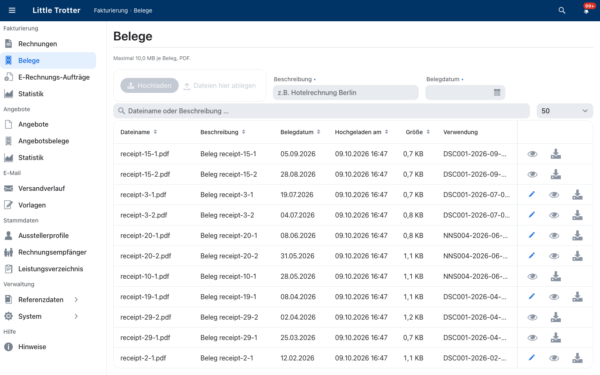
9.2. Belege und Rechnungsgröße
Beim Hochladen reduziert die Anwendung große Belege auf 0,8 MB; Text bleibt erhalten, wo das möglich ist. Grund: Eine E-Rechnung darf mit XML und bis zu 19 Belegen 20 MB nicht überschreiten, und viele Mailserver nehmen Anhänge nur bis 10–25 MB an. Kleinere Belege verringern zudem den Aufwand für Speicherung und Übertragung auf beiden Seiten. Zur Einordnung: Bei 1.500 Rechnungen pro Jahr entspricht die Ersparnis über die Aufbewahrungsfrist etwa der Jahresbindung von 10–40 Buchen (geschätzt, Quellen im Anhang „Belegdisziplin, Datenvolumen und Ressourcenschutz“). Sie können die Reduktion je Beleg ablehnen; die Anwendung weist dann beim Erstellen einer Rechnung darauf hin, wenn die 20 MB überschritten würden.
Ablauf beim Hochladen: Belege bis 0,8 MB werden unverändert übernommen. Größere Belege bis 10 MB bietet der Dialog „Beleg reduzieren“ mit den Optionen Reduzieren (empfohlen) und Unverändert übernehmen an; unverändert ist nur bis 1 MB möglich. Belege über 10 MB werden abgelehnt (Tipp: mit höchstens 150 dpi scannen oder als Text-PDF exportieren). Muss ein Beleg als Bild gespeichert werden, ist sein Text anschließend nicht mehr durchsuchbar; die Anwendung meldet das. In der Belegliste zeigt die Spalte „Hinweis“ unreduzierte Belege, und die Aktion Beleg reduzieren holt die Reduktion nach.
Warum die Grenzen so gewählt sind und was kleinere Belege über die gesamte Verarbeitungskette bewirken, erläutert der Anhang „Belegdisziplin, Datenvolumen und Ressourcenschutz“.
10. E-Rechnungs-Auftragsschlange und Validierungskette
Um auch bei großen Dokumenten und Massenverarbeitungen eine unterbrechungsfreie Benutzeroberfläche zu garantieren, werden E-Rechnungs-Aufträge asynchron verarbeitet.
10.1. Asynchrone Auftragsschlange
In der E-Rechnungs-Auftragsübersicht (/e-invoice-jobs) werden sämtliche Generierungsläufe mit ihrem aktuellen Verarbeitungsstatus überwacht:
-
Filterkriterien: Selektion nach Empfängerprofil sowie Zeitbereich (Von / Bis).
-
Auftragsstatus: Grünes Häkchen symbolisiert erfolgreich generierte und validierte Dokumente.
-
Laufzeiten: Transparente Protokollierung der Verarbeitungsdauer (Startzeit, Endzeit und Gesamtlaufzeit).
-
Sofort-Download: Direkter Zugriff auf das erzeugte PDF/A-3-Dokument sowie das isolierte Rechnungs-XML über die Aktionsschaltflächen PDF und XML.
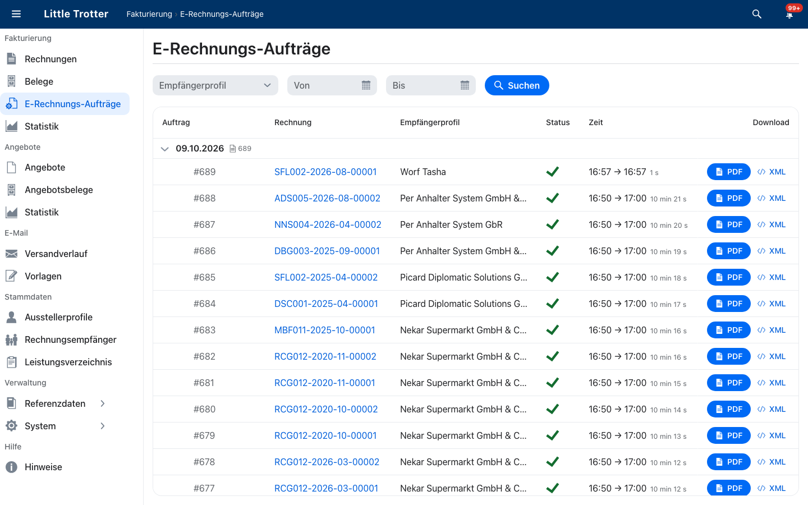
10.2. Mehrstufige Prüfkette: Mustang, KoSIT und veraPDF
Jeder E-Rechnungs-Auftrag durchläuft eine fest definierte, vierstufige Validierungskette:
-
XML-Generierung und Mustang-Komponente: Erzeugung des standardkonformen Rechnungs-XML nach EN 16931 bzw. Einbettung in das PDF/A-3 über die Mustangproject-Bibliothek.
-
KoSIT-Prüftool (IT-Planungsrat): Vollständige Prüfung gegen die offiziellen Schematron- und XRechnung-Geschäftsregeln des Bundes. Das KoSIT-Ergebnis entscheidet verbindlich über die Gültigkeit des Dokuments (
SUCCESSFULvs.NOT_SUCCESSFUL). -
veraPDF-Konformitätsprüfung: Unabhängige Verifikation des erzeugten PDF/A-3-Dokuments auf Archivierungs- und Spezifikationskonformität nach ISO 19005-3.
-
Interne Plausibilitätsprüfung: Abgleich von Rechenwerten, Rundungen und Steueraufschlüsselungen nach internen kaufmännischen Rechenregeln.
10.3. Detaillierter Validierungsbericht (Prüfbericht-Dialog)
Über die Aktionsschaltfläche Validierungsbefunde im Reiter E-Rechnung der Rechnungsansicht lässt sich der vollständige Prüfbericht öffnen:
-
Übersichtliche Darstellung von Prüfstatus, angewandtem Profil und genauer Prüfer-Version.
-
Detaillierte Auflistung sämtlicher KoSIT-Meldungen mit Regelschlüssel, Schweregrad und betroffener XML-Position.
-
Transparenter Nachweis der gesamten Prüfkette („Prüfhistorie / Nachweiskette“) zur Vorlage bei Prüfern oder Gateways.
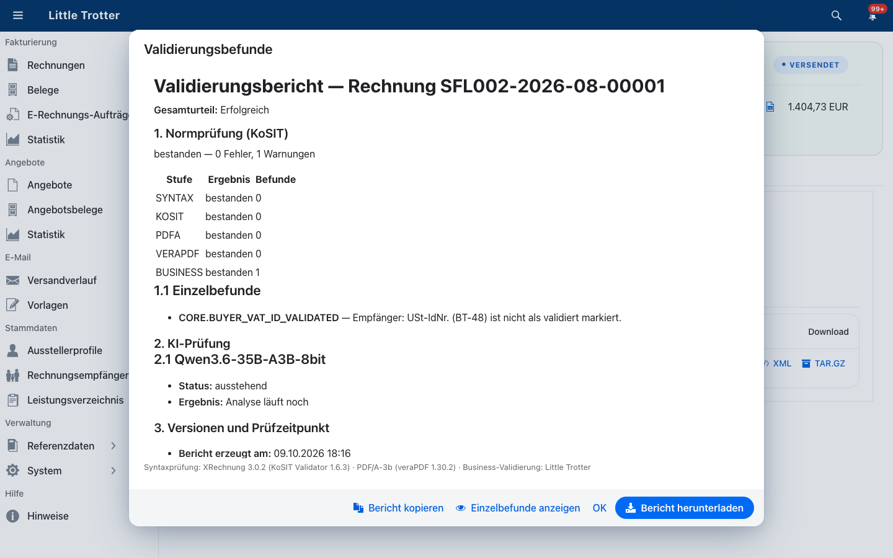
11. Status-Lebenszyklus, GoBD-Zustandsmaschine und Storno
Die GoBD fordern die Unveränderbarkeit von Buchungsbelegen nach deren Festschreibung. Little Trotter X-Invoice setzt dies durch eine deterministische Zustandsmaschine um.
11.1. Zustandsdiagramm des Rechnungsprozesses
Das folgende Zustandsdiagramm visualisiert die zulässigen Statusübergänge von der Entwurfserstellung bis zur endgültigen Festschreibung oder Stornierung:
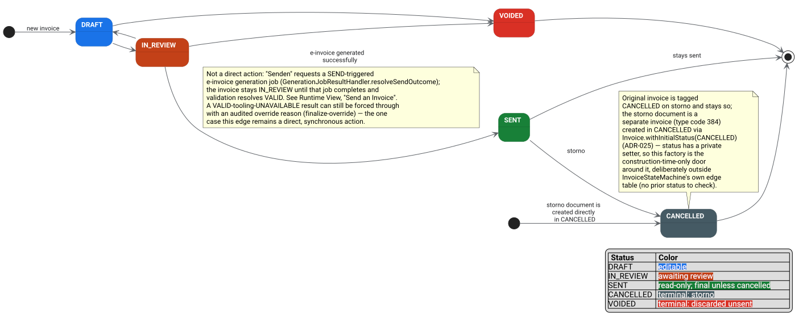
11.2. Phasen des Lebenszyklus
| Status | Bedeutung | Zulässige Aktionen |
|---|---|---|
|
Rechnung in Bearbeitung, steuerlich unbedeutend. |
Beliebig editierbar, Belege zuordnen/entfernen, Löschen/Annullieren ( |
|
Inhaltliche und steuerliche Prüfung läuft. |
Prüfung durchführen, Freigabe zur Festschreibung oder Rückstufung auf |
|
Rechnung ist steuerlich wirksam und versendet. |
Schreibgeschützt ( |
|
Entwurf wurde vor Festschreibung verworfen. |
Archiviert; Belege werden an den Belegpool zurückgegeben; Lückenlosigkeit im Nummernkreis bleibt gewahrt. |
|
Rechnung wurde nach Festschreibung korrigiert. |
Nur über Stornorechnung Typ 384 erreichbar; Originalbeleg bleibt dauerhaft einsehbar. |
11.3. Ausschließliche Rechnungskorrektur nach Typ 384
Nach dem Versand (SENT) ist die Rechnung schreibgeschützt. Korrekturen erfolgen im System ausschließlich über die Rechnungskorrektur Typ 384 (nicht über eine Gutschrift):
-
Begriffliche Klarheit: Typ 381 ist eine Gutschrift im Sinne einer Minderung (Credit Note), Typ 389 eine gutschriftsähnliche Abrechnung, die der Leistungsempfänger selbst ausstellt. Beides ist hier nicht vorgesehen. Die Stornierung oder Korrektur durch den Rechnungsaussteller erfolgt technisch und semantisch als Rechnungskorrektur (Typ 384).
-
Pflichtreferenzierung: Eindeutige Referenzierung auf Rechnungsnummer (
BT-25) und Rechnungsdatum (BT-26) des ursprünglichen Belegs im Rechnungs-XML. -
Vollständige Vorzeichenumkehr: 1:1-Umkehr sämtlicher Einzelpositionen, Steuerbeträge und des Zahlbetrags.
-
Unterdrückung von Zahlungsbedingungen: Das Korrekturdokument enthält automatisch den Vermerk
No Payment Terms, da kein neuer Zahlungsanspruch entsteht.
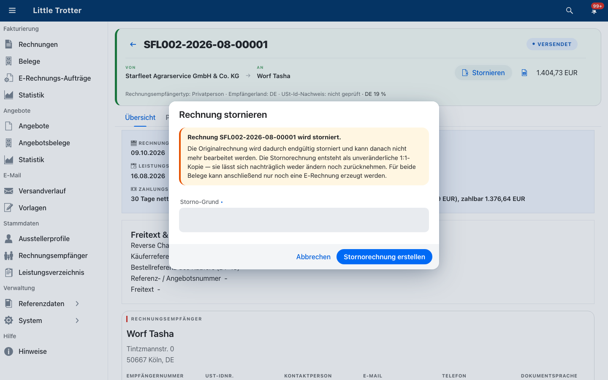
12. Rechnungsversand per E-Mail, Vorlagen und Versandverlauf (Alpha)
|
Warnung
|
Entwicklungsstand: Alpha-Stadium |
Nach der formalen Freigabe und Festschreibung einer Rechnung erfolgt der Rechnungsversand an den Kunden typischerweise per E-Mail. Little Trotter X-Invoice stellt hierfür einen integrierten Versanddialog mit konfigurierbaren Textvorlagen, einer mitlaufenden Briefumschlag-Vorschau und einem lückenlosen internen Versandverlauf bereit.
|
Wichtig
|
Abgrenzung zwischen Fachanwendung und E-Mail-Archiv: |
12.1. Versandprozess: Vom Beleg zum Empfänger
Der Rechnungsversand erfolgt in zwei Schritten direkt aus der Detailansicht der Rechnung: zuerst „Festschreiben“, danach „E-Mail senden“.
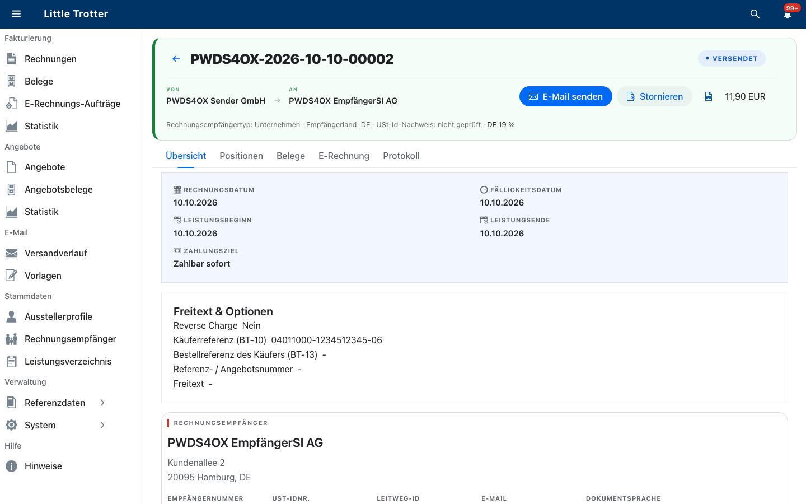
-
Schritt 1 „Festschreiben“ (Status „In Prüfung“,
IN_REVIEW): Die Schaltfläche Festschreiben startet die Erzeugung und Prüfung der E-Rechnung (trigger = SEND). Das System erzeugt das PDF/A-3-Dokument mit eingebettetem XML (Factur-X / XRechnung), validiert es und setzt bei Erfolg den Status aufSENT(„Festgeschrieben“).-
Während der Auftrag läuft, zeigt das Cockpit anstelle der Schaltfläche die Statuszeile „E-Rechnung wird erzeugt und geprüft … (seit n s)“.
-
Bei Erfolg erscheint der Hinweis „Rechnung … festgeschrieben. Sie können die E-Mail jetzt senden.“.
-
Scheitern Erzeugung oder Prüfung, kehrt die Schaltfläche Festschreiben zurück. Der Grund erscheint als Hinweis und im Nachrichtencenter.
-
-
Schritt 2 „E-Mail senden“ (Status
SENT): Die Schaltfläche E-Mail senden wird nur angezeigt, wenn das E-Mail-Modul aktiv ist. Sie unterliegt einem serverseitigen Freigabe-Gate (MailSendGate), das alle Bedingungen vorab prüft. Ist eine Bedingung nicht erfüllt, bleibt die Schaltfläche deaktiviert und der Tooltip nennt präzise den ersten Blocker:-
Auftrag läuft noch (
JOB_IN_FLIGHT): „E-Rechnung wird erzeugt und geprüft …“ -
Nicht festgeschrieben (
NOT_ISSUED): „Die Rechnung ist noch nicht festgeschrieben.“ -
Prüfung läuft noch (
VALIDATION_PENDING): „Die E-Rechnung wird noch geprüft …“ -
Prüfung nicht bestanden (
NOT_VALID): „Die E-Rechnungs-Prüfung ist nicht bestanden.“ -
Versandexemplar fehlt (
DOCUMENT_MISSING): „Das Versandexemplar liegt noch nicht vor.“ -
Reproduziertes Exemplar (
REPRODUCED): Das Dokument ist eine Arbeits-Reproduktion, die das System nicht per E-Mail verlassen darf. -
Fehlende E-Mail-Adresse (
NO_RECIPIENT_EMAIL): „Der Empfänger hat keine E-Mail-Adresse. Bitte in den Stammdaten ergänzen.“ -
Sind alle Bedingungen erfüllt (
READY), wechselt die Schaltfläche beim Klick sofort in den Ladezustand („Entwurf wird erstellt …“) und öffnet anschließend den E-Mail-Editor. Ohne Klick öffnet sich nichts.
-
-
Versanddialog (
MailComposeView): Der Versanddialog für den Belegentwurf öffnet sich nur nach dem Klick auf E-Mail senden:
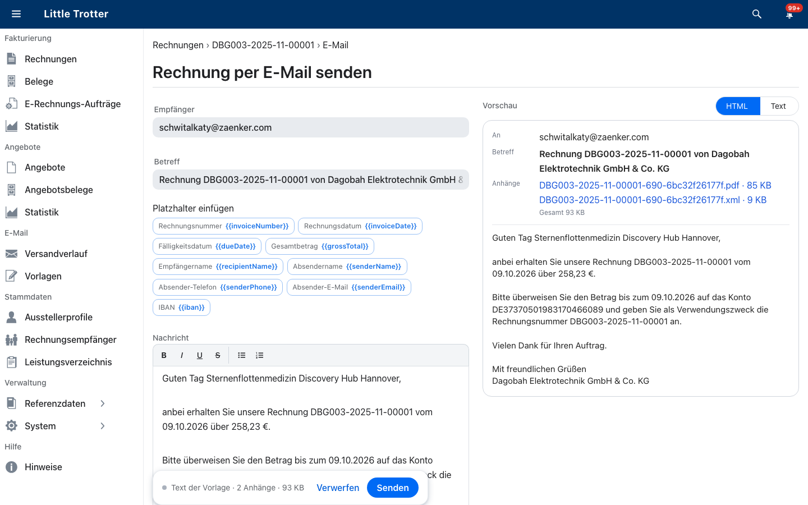
Der Versandbildschirm (mail/compose/:draftId) ist responsiv zweigeteilt aufgebaut:
-
Linke Spalte (Editor):
-
Empfängeradresse: Automatische Vorbelegung aus den Kundenstammdaten (
recipient.email), bei Bedarf im Einzelfall vor dem Versand anpassbar. -
Betreffzeile: Vorbelegt anhand der zugeordneten Vorlage (z. B.
Rechnung {{invoiceNumber}} von {{senderName}}) mit dynamisch aufgelösten Werten. -
Nachrichtentext & Platzhalter-Chips: Formatierbarer Textkörper. Über die Schaltfläche Platzhalter oberhalb des Textfeldes lassen sich dynamische Datenfelder als Klick-Chips direkt in den Text einfügen.
-
Anhänge: Die fertig kompilierte E-Rechnung (PDF/A-3 mit eingebettetem Factur-X/XRechnung-XML) ist fest als Anhang verknüpft. Dateiname und Dateigröße werden transparent ausgewiesen und können vor dem Versand per Klick heruntergeladen und geprüft werden.
-
-
Rechte Spalte (Mitlaufende Briefumschlag-Vorschau):
-
Visualisiert die E-Mail realitätsgetreu inklusive aller SMTP-Kopfzeilen (
Von,An,Betreff,Anhänge) und dem aufgelösten Reintext. -
Dynamische Aktualisierung bei Änderungen im linken Textbereich.
-
-
Sendeleiste:
-
Schaltfläche Senden: Übergibt den finalen E-Mail-Auftrag an das E-Mail-Subsystem und den Firmen-Mailserver (SMTP).
-
Schaltfläche Verwerfen: Bricht den Versanddialog ab und kehrt zur Belegansicht zurück (der festgeschriebene Beleg bleibt unverändert erhalten).
-
Nach einem Versand bleibt Erneut senden im Cockpit verfügbar. Jeder Versand wird im Versandverlauf protokolliert. Die Versandzeile im Cockpit enthält einen Sprunglink in das Versandjournal:

12.2. Der Weg über das E-Mail-Archiv (Übertragungskette)
Vom Klick auf „Senden“ bis zur Archivierung durchläuft die Rechnungs-E-Mail eine definierte Kette:
| Station | Komponente | Verarbeitung, Archivbezug & Prüfungsrelevanz |
|---|---|---|
1. Belegaufbereitung & Freigabe |
Kernanwendung |
Erzeugt die vollständige Nachricht mit Belegkopf, Textkörper und E-Rechnung (PDF/A-3 inkl. XML). Protokolliert die Freigabe und den Statusübergang auf |
2. Interner Versandverlauf |
E-Mail-Subsystem ( |
Speichert den Sendeauftrag im internen Versandverlauf (Append-Only) und initiiert die SMTP-Übergabe. |
3. Postausgangs-Übergabe |
Mailserver / SMTP |
Authentifizierte Übertragung via SMTP/TLS an den Firmen-Mailserver. Protokollierung des SMTP-Statuscodes ( |
4. Archivierung durch Betreiber |
Archivsystem des Betreibers |
Der Betreiber sichert ausgehende Mails im eigenen unveränderbaren E-Mail-Archiv. Die automatische Übergabe einer inhaltsgleichen Archivkopie (inkl. Original-PDF und XML) an eine Archivadresse wird im Leitfaden Archivübergabe beschrieben. Dient bei Betriebsprüfungen als Nachweis des tatsächlichen Versandvorgangs. |
5. Kryptografisches Archivpaket ( |
E-Mail-Subsystem ( |
Nach erfolgreichem SMTP-Versand schnürt das System im Hintergrund ein signiertes Archivpaket ( |
6. Internet-Zustellung & Empfängerprüfung |
Internet-Mail-Relay & Empfänger / Prüfer |
Zustellung an den Kunden unter Einsatz von SPF, DKIM und DMARC. Der Empfänger prüft den Beleg visuell (DIN 5008 PDF mit GiroCode) oder automatisiert über das eingebettete E-Rechnungs-XML. |
12.3. Vorlagenverwaltung und Mehrsprachigkeit
Unter (bzw. /mail/templates) werden die Textvorlagen für den Rechnungs- und Angebotsversand zentral verwaltet:
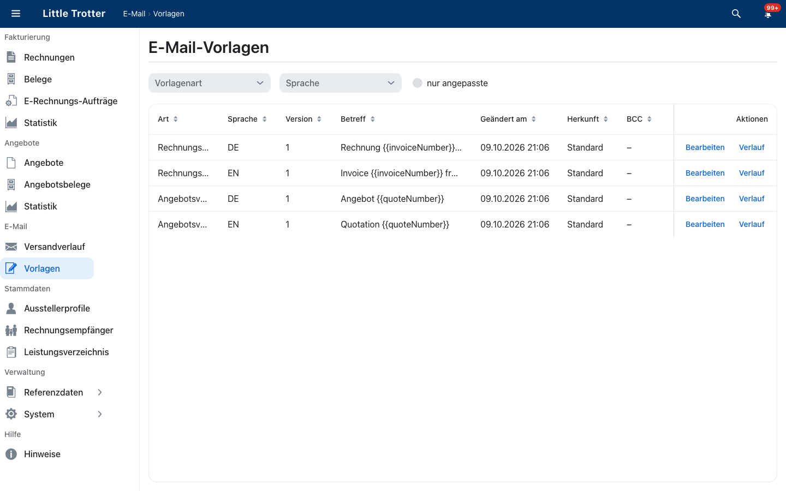
12.3.1. Standardvorlagen und Sprachlogik
Das System liefert werkseitig vorgefertigte Standardvorlagen für Rechnungen und Angebote in zwei Sprachen aus. Die Zuordnung der Vorlagensprache folgt automatisch der beim Rechnungsempfänger hinterlegten Belegfamilie:
-
Deutsches Belegformat (
GERMAN): Verwendet standardmäßig die deutsche Vorlage (DE). -
Internationales Belegformat (
INTERNATIONAL): Verwendet automatisch die englische Vorlage (EN).
12.3.2. Vorlagen-Editor mit Live-Vorschau und Platzhalter-Chips
Über die Aktion Bearbeiten in der Vorlagenliste öffnet sich der Vorlagen-Editor:
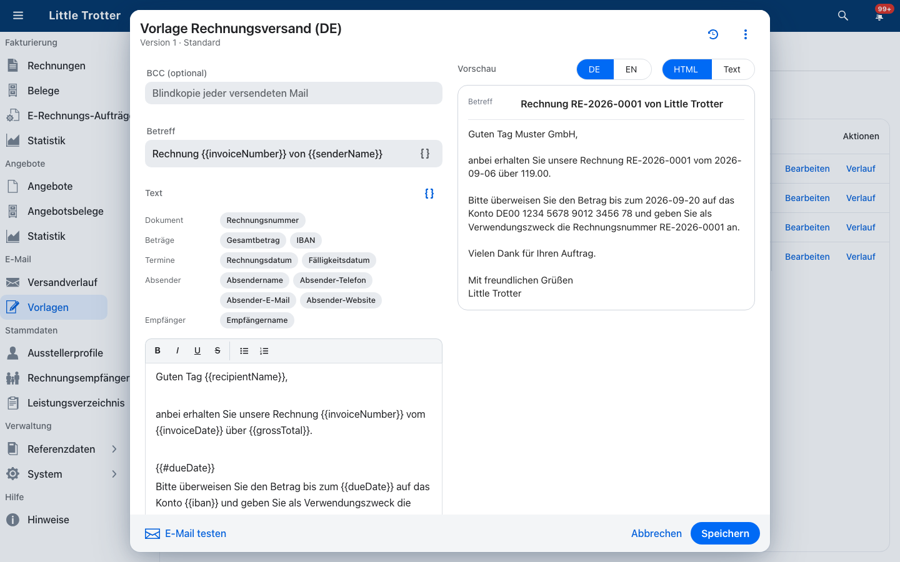
-
Integrierte Platzhalter-Leiste: Über das Chip-Symbol Platzhalter oberhalb des Textfeldes lassen sich vordefinierte Platzhalter (
{{invoiceNumber}},{{dueDate}}, etc.) per Mausklick an der Cursor-Position einfügen. -
Echtzeit-Vorschau: Die rechte Dialoghälfte visualisiert sofort die gerenderte E-Mail mit realistischen Beispieldaten. Unbekannte oder fehlerhafte Platzhalter werden rot hervorgehoben und sperren das Speichern, sodass keine defekten Vorlagen in den Betrieb gelangen.
-
Testversand: Über das Menü Testen kann direkt aus dem Dialog eine Test-E-Mail an das eigene Postfach oder die hinterlegte BCC-Adresse gesendet werden.
12.3.3. Platzhalter-System
Zur dynamischen Personalisierung stehen feste Platzhalter zur Verfügung. Die Ersetzung erfolgt strikt als Text-Substitution (keine Skripte, keine externen Ausdrücke):
| Platzhalter | Bedeutung | Beispielwert |
|---|---|---|
|
Vollständige Rechnungsnummer |
|
|
Ausstellungsdatum der Rechnung |
|
|
Zahlungsziel / Fälligkeitsdatum |
|
|
Gesamtbruttobetrag inkl. Währung |
|
|
Firmenname oder Name des Rechnungsempfängers |
|
|
Eigener Unternehmensname |
|
|
Zahlungs-IBAN des Ausstellers |
|
|
Hinweis
|
Lokalisierung von Beträgen und Datumsangaben: Die Formatierung richtet sich nach der Sprache der Vorlage, nicht nach der Browser-Einstellung des ausführenden Nutzers. Eine deutsche Vorlage formatiert Geldbeträge nach deutschen Gepflogenheiten ( |
12.3.4. Versionshistorie und Schutz vor Datenverlust
Die Vorlagenverwaltung arbeitet nach dem Append-Only-Verfahren (reine Versionierung). Über die Schaltfläche Verlauf in der Vorlagenliste lässt sich die Versionshistorie jeder Vorlage einsehen:
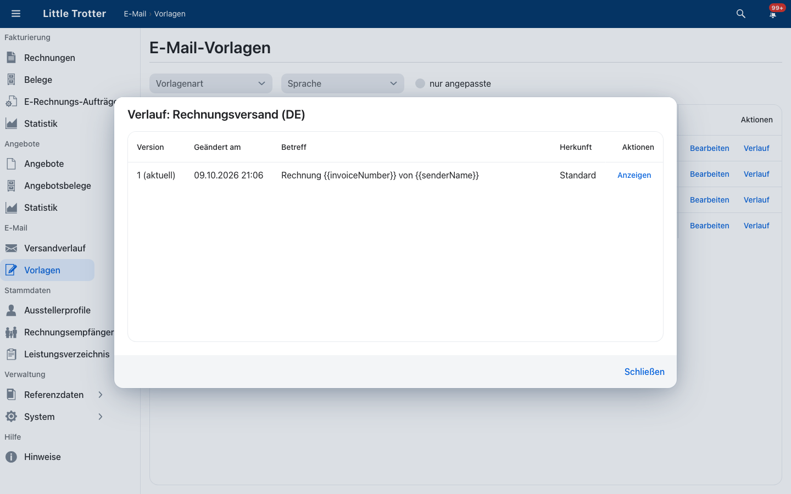
-
Revisionssichere Bearbeitung: Jedes Speichern erzeugt eine neue, aufsteigende Versionsnummer. Bisherige Textversionen bleiben in der Datenbank unverändert erhalten.
-
Rückverfolgbarkeit: Im Journal wird vermerkt, mit welcher exakten Vorlagenversion eine Rechnungs-E-Mail erzeugt wurde.
-
Wiederherstellung & Zurücksetzen auf Standard: Jede frühere Version kann per Mausklick wiederhergestellt werden. Zudem steht über das Drei-Punkte-Menü im Editor die Option Auf Standard zurücksetzen bereit, welche den unveränderten Werksauslieferungszustand als neue Version einspielt.
12.4. Versandverlauf: Technische Nachvollziehbarkeit (Mail-Journal)
Der systeminterne Versandverlauf ( bzw. /mail/journal) protokolliert jeden Versandvorgang lückenlos:

-
Unveränderbarkeit im System: Die internen Versandverlaufstabellen besitzen keine Lösch- oder Änderungsberechtigungen für Standardnutzer.
-
Status-Lebenszyklus:
-
Erstellt(CREATED): Versandauftrag wurde im System initialisiert. -
In Warteschlange(QUEUED): Nachricht ist für die Übergabe an den SMTP-Server bereitgestellt. -
Versendet(SENT): Der Ausgangsserver hat die E-Mail entgegengenommen und mit einem positiven Statuscode quittiert. -
Fehlgeschlagen(FAILED): Die Übertragung an den Postausgangsserver wurde abgewiesen (z. B. Authentifizierungsfehler, Verbindungsabbruch).
-
-
Archivpaket-Download: Zu jedem erfolgreich versendeten Eintrag kann direkt über das Symbol Archivpaket herunterladen das signierte
.tar.gz-Paket (bestehend aus Original-.eml, Metadaten und Ed25519-Signatur) für Prüfzwecke bezogen werden. -
Fehlerbehandlung bei Sendeversuchen: Schlägt ein Sendevorgang fehl, bleibt der Eintrag dauerhaft dokumentiert. Ein erneuter Sendeversuch erzeugt einen neuen Eintrag mit Verweis auf den vorherigen Vorgang.
12.5. Praxisbeispiele
12.5.1. Beispiel 1: Standard-Rechnungsversand (Inland, Handwerk / Dienstleistung)
Ein Handwerks- oder Dienstleistungsbetrieb versendet eine fertiggestellte Rechnung an einen Geschäftspartner.
-
Verwendete Vorlage: Standard Rechnungsversand (Deutsch,
DE) -
Vorlagentext mit Platzhaltern (Template):
Betreff: Rechnung {{invoiceNumber}} von {{senderName}}
Guten Tag {{recipientName}},
anbei erhalten Sie unsere Rechnung {{invoiceNumber}} vom {{invoiceDate}} über {{grossTotal}}.
Bitte überweisen Sie den Betrag bis zum {{dueDate}} auf unser angegebenes Geschäftskonto bei der Musterbank (IBAN: {{iban}}).
Das beigefügte Rechnungsdokument entspricht dem Standard Factur-X / ZUGFeRD und enthält die maschinenlesbaren Rechnungsdaten zur direkten Übernahme in Ihre Finanzbuchhaltung.
Mit freundlichen Grüßen
{{senderName}}
-
Aufgelöste E-Mail an den Empfänger / ins Archiv (Versandstand):
-
E-Mail-Betreff:
Rechnung RE-2026-0118 von Zils Metallbau & Planungs GmbH -
Nachrichtentext:
-
Guten Tag Musterbau Süd GmbH, anbei erhalten Sie unsere Rechnung RE-2026-0118 vom 08.10.2026 über 3.421,25 EUR. Bitte überweisen Sie den Betrag bis zum 22.10.2026 auf unser angegebenes Geschäftskonto bei der Musterbank (IBAN: DE02 1005 0000 1098 7654 32). Das beigefügte Rechnungsdokument entspricht dem Standard Factur-X / ZUGFeRD und enthält die maschinenlesbaren Rechnungsdaten zur direkten Übernahme in Ihre Finanzbuchhaltung. Mit freundlichen Grüßen Zils Metallbau & Planungs GmbH
-
Anhang:
RE-2026-0118.pdf(ZUGFeRD 2.2 / Factur-X, 245 KB — DIN 5008 Ausdruck mit GiroCode)
12.5.2. Beispiel 2: Internationaler Rechnungsversand (EU Binnenmarkt / Reverse Charge)
Ein grenzüberschreitender Auftrag an einen Kunden in Luxemburg mit Steuerschuldumkehr des Leistungsempfängers.
-
Verwendete Vorlage: Standard Invoice Dispatch (Englisch,
EN) -
Vorlagentext mit Platzhaltern (Template):
Subject: Invoice {{invoiceNumber}} from {{senderName}}
Dear {{recipientName}},
Please find attached invoice {{invoiceNumber}} dated {{invoiceDate}} with a total amount of {{grossTotal}}.
Payment is due on or before {{dueDate}} to our bank account (IBAN: {{iban}}).
This electronic invoice complies with the European standard EN 16931 and contains structured XML data for automated processing.
Notice: Intra-Community supply of services / Reverse Charge mechanism applies. VAT to be accounted for by the recipient.
Sincerely,
{{senderName}}
-
Aufgelöste E-Mail an den Empfänger / ins Archiv (Versandstand):
-
E-Mail-Betreff:
Invoice INV-2026-0045 from Zils Engineering Solutions -
Nachrichtentext:
-
Dear LuxConstruct S.A., Please find attached invoice INV-2026-0045 dated 2026-10-08 with a total amount of 5,800.00 EUR. Payment is due on or before 2026-10-22 to our bank account (IBAN: LU12 0019 4006 4472 0000). This electronic invoice complies with the European standard EN 16931 and contains structured XML data for automated processing. Notice: Intra-Community supply of services / Reverse Charge mechanism applies. VAT to be accounted for by the recipient. Sincerely, Zils Engineering Solutions
-
Anhang:
INV-2026-0045.pdf(XRechnung / Factur-X International, 280 KB)
12.5.3. Beispiel 3: Auszug aus dem Versandverlauf
Der nachfolgende Datensatz zeigt die protokollierte Bestätigung des Ausgangsservers nach erfolgreicher Übergabe:
| Feld im Versandverlauf | Erfasster Wert |
|---|---|
Vorgangs-ID |
|
Belegreferenz |
Rechnung |
Status |
|
Zeitstempel (UTC) |
|
Empfänger |
|
Nachrichten-ID (Message-ID) |
|
Prüfsumme (.eml) |
|
Server-Rückmeldung |
|
13. Rechnungs-Audit-Journal
Jede relevante Aktion im System wird lückenlos im anwendungsweiten Audit-Journal aufgezeichnet, um die buchhalterische Nachvollziehbarkeit des Belegablaufs technisch strukturiert zu erfassen.
|
Wichtig
|
Wichtiger Hinweis zur Abgrenzung: Little Trotter ersetzt kein Archiv
|
13.1. Belegbezogenes Änderungsprotokoll (Rechnungsebene)
Im Reiter Protokoll jeder einzelnen Rechnung wird die Lebenszyklushistorie des Belegs chronologisch dokumentiert:
-
Ereignisarten:
-
Statusübergänge (
DRAFT→IN_REVIEW→SENT). -
Freigaben, Validierungsläufe und Schematron-Prüfergebnisse (z. B. „Prüfergebnis: Validierung läuft → Validiert“).
-
Dokumentenerzeugung (PDF- und Factur-X/XRechnung-XML-Kompilierung mit Prüfsummen).
-
Wertänderungen und Betragsdifferenzen (
Δ Brutto).
-
-
Erfasste Attribute: Exakter Zeitstempel, ausführendes Nutzerkonto bzw. Systemdienst und detaillierte Aktionsbeschreibung.
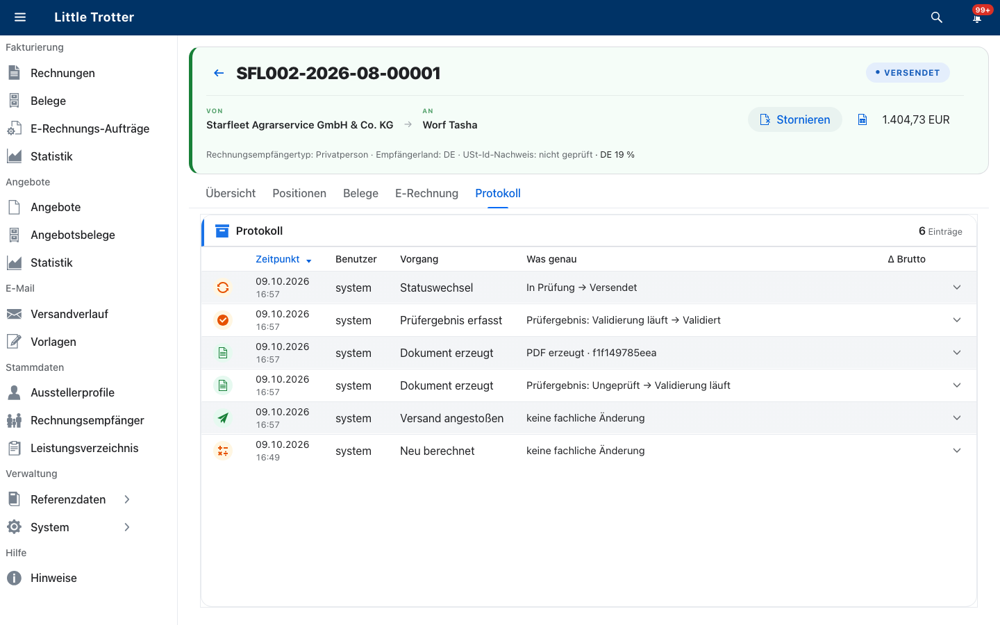
13.2. Zentrales System-Audit-Journal (Gesamtsystem)
Unter (/system) steht das mandanten- und rechnungsübergreifende Rechnungs-Audit-Journal zur Verfügung:
-
Zentraler Prüfungsüberblick: Vollständiger Nachweis aller buchhalterischen und technischen Systemereignisse über alle Rechnungsnummern hinweg (über 2.000 erfasste Journalzeilen).
-
Such- und Filterfunktionen: Gezielte Filterung nach Rechnungsnummer, Nutzerkennung, Vorgangsart (z. B. Belegupload, Validierung, Statuswechsel) sowie Datumsintervallen (Von / Bis).
-
Schnellanalyse und Detailansicht: Direkter Einblick in Betragsabweichungen (
Δ Brutto) und Detailparameter jeder Systemtransaktion.
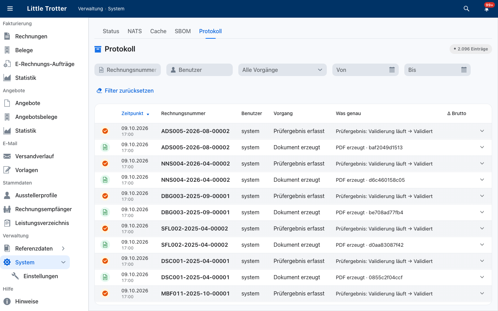
14. Referenzdaten-Pflege und Konfigurierbarkeit
Little Trotter X-Invoice vermeidet starre Vorgaben: Sämtliche Zahlungsbedingungen, Steuersätze und Einheiten sind über den Referenzdatenbereich vollständig anpassbar.
14.1. Gruppierter Aufbau der Referenzdaten
Die Referenzdaten sind in drei logische Hauptgruppen unterteilt, die direkt über sprechende Deep-Links erreichbar sind:
-
Abrechnung (
/referenzdaten/abrechnung): Zahlungsbedingungen, Steuersätze, Einheiten, Nummernkreise und PDF-Vorlagen. -
Reisekosten-Sätze (
/referenzdaten/reisekosten): Verpflegungspauschalen Inland/Ausland und Übernachtungspauschalen. -
E-Rechnung (
/referenzdaten/e-rechnung): B2B-Profile, behördliche Leitweg-ID-Zuordnungen, PDF-Vorlagen und Validierungs-Engines (/referenzdaten/e-rechnung/validierung).
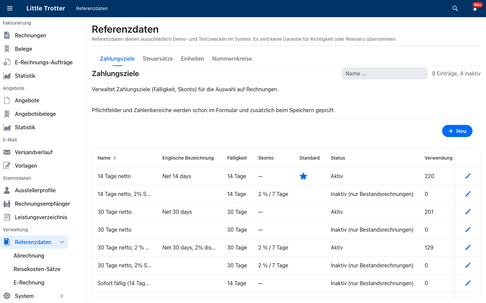
Das Subjekt „Angebot“ im Reiter „Nummernkreise“ legt Präfix, Datumsteil und Zählerbreite der Angebotsnummern fest (ausgeliefert: AN-JJJJ-NNNN, zum Beispiel AN-2026-0001). Der Zähler selbst wird vom Angebotsmodul geführt; deshalb fehlen dort „Zähler synchronisieren“ und „Periode abschließen“. Solange noch kein aktiver Angebots-Nummernkreis ins Angebotsmodul übertragen wurde, wird „Zur Prüfung“ mit einem Hinweis auf den Reiter „Nummernkreise“ abgelehnt; das Angebot bleibt ein Entwurf.
14.2. Bearbeitung von Zahlungsbedingungen
-
Fälligkeitsfristen: Konfiguration von Netto-Tagen und Skontofristen.
-
Skontosätze: Festlegung von Skontoprozenten und Hinweistexten.
-
Standard-Status: Festlegung, welche Bedingung bei Neuanlage eines Empfängers oder einer Rechnung vorselektiert wird.
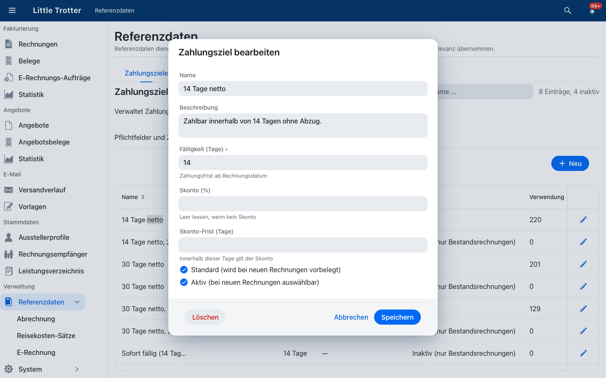
14.3. Administration von B2B-Profilen und Feldregeln
Im Bereich (/referenzdaten/e-rechnung/b2b-profile) werden maßgeschneiderte E-Rechnungsprofile für spezifische B2B-Kundenanforderungen verwaltet:
-
Stammdaten und Geltungsbereich (Länder-Geltungsbereich):
-
Profilname, fachliche Beschreibung und Aktivierungsstatus.
-
Optionale Einschränkung auf bestimmte Länder: Felder erscheinen im Ausstellerprofil nur, wenn eine USt-Registrierung für das jeweilige Land hinterlegt ist (ohne Auswahl: universell sichtbar).
-
-
Feldregel-Definition (Regel-Matrix):
-
Geschäftsdaten-Feldzuordnung (Business-Term): Auswahl aus dem EN-16931-Katalog (z. B.
BT-19Kostenstelle,BT-72Leistungsdatum,BT-155Positionsfreitext). -
Pflichtgrad-Steuerung:
-
Pflicht: Zwingende Eingabe im Beleg bzw. Stammsatz. -
Optional: Freigestellte Erfassung nach Bedarf. -
Bedingt pflichtig: Feld wird zwingend, sobald ein verknüpfter Auslöser-Term befüllt ist. -
Pflicht, wenn Auslöser-Term leer ist(Entweder-oder-Regel / XOR): Feld wird zwingend, wenn ein anderer Term (z. B.BT-134Leistungszeitraum) unbefüllt bleibt.
-
-
Anzeigeort:
-
Rechnung: Erscheint direkt in der Belegmaske bzw. im E-Rechnungs-Assistenten. -
Rechnungsempfänger: Verwaltung direkt am Kundenstamm (recipient_b2b_field_value). -
Rechnungsaussteller: Feste Bindung an das Mandantenprofil.
-
-
Vorgabewerte: Vordefinierte Standardwerte für neue Datensätze zur Reduzierung manueller Eingabefehler.
-
Schutz vor Systemkonflikten: Standard-Profile (z. B. „Neckar“) bleiben als Systemvorlagen geschützt; für kundenspezifische Anpassungen steht die 1-Klick-Funktion Profil kopieren bereit.
-
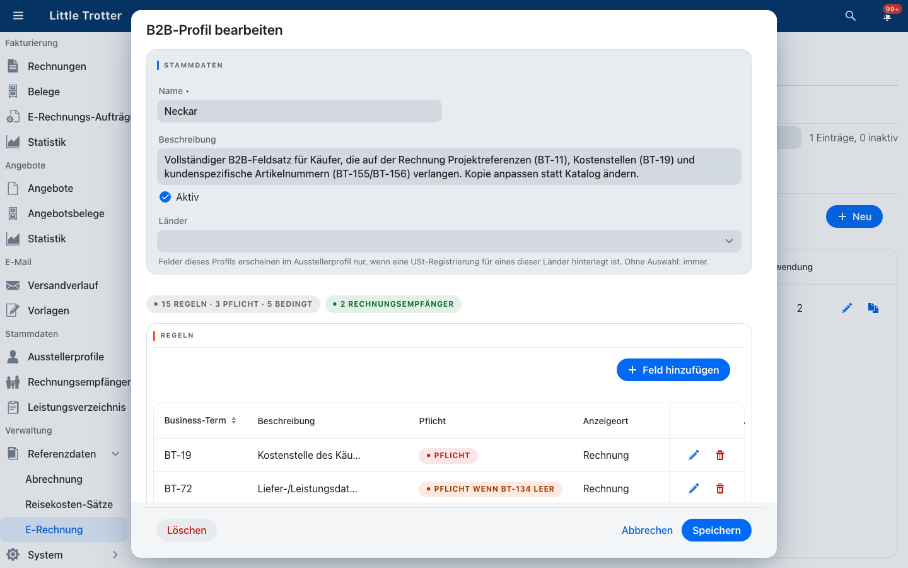
15. Rechnungsstatistik und Bereichsauswertungen
Das Statistikmodul (/statistics) bietet detaillierte kaufmännische Kennzahlen und Analysen über frei wählbare Zeiträume und Geschäftsbereiche.
15.1. Kennzahlen und Übersichten
-
Umsatzkennzahlen: Brutto-, Netto- und Steuerumsatz für den gewählten Berichtszeitraum.
-
Statusverteilung: Anteile von Entwürfen, versendeten Rechnungen und offenen Forderungen.
-
Kunden- und Branchenanalyse: Umsatzstärkste Rechnungsempfänger und Leistungsarten.
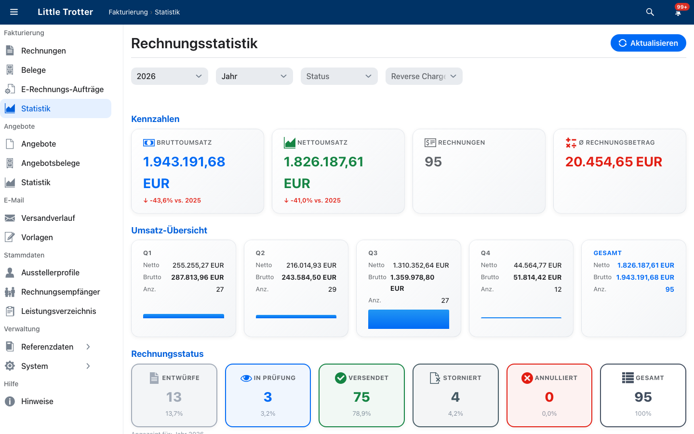
16. Anhang: Belegdisziplin, Datenvolumen und Ressourcenschutz
|
Wichtig
|
Dieser Anhang ist eine praxisbezogene Sensibilisierung für den Arbeitsalltag. Er verdeutlicht anhand von behördlichen Richtwerten (Quellen 1–6), warum schlanke Belege unmittelbare betriebliche Vorteile bringen und Systeme vor Überlastung schützen. |
16.1. Was mit einem Beleg passiert (Die 4-Hop-Kette)
Ein Beleg wird im Geschäftsverkehr nicht einmalig gespeichert, sondern entlang einer Kette kopiert und übertragen.
Hop — ein Übertragungsschritt zwischen zwei Systemen. Die Kette folgt der standardisierten Internet-Mail-Architektur nach RFC 5598 [7] für den Rechnungsversand per E-Mail sowie der anschließenden Archivübernahme:
| Hop | Von → nach | Station / Protokoll |
|---|---|---|
1 |
Absender-Anwendung → Ausgehender Mailserver des Absenders |
Mail: MUA/MSA → MTA (SMTP/TLS) [7] |
2 |
Mailserver des Absenders → Mailserver des Empfängers |
Mail: MTA → MTA (Internet-Relay) [7] |
3 |
Mailserver des Empfängers → Eingangspostfach / Verarbeitungsdienst des Empfängers |
Mail: MTA → MDA/Postfach (IMAP/Eingangskanal) [7] |
4 |
Eingangssystem des Empfängers → Unveränderbares Rechnungsarchiv |
Archivübernahme nach Eingangsprüfung (GoBD-Langzeitspeicher) |
Kopie — eine dauerhaft gespeicherte Fassung des Belegs bzw. der fertigen E-Rechnung. In einer reinen Basiskonfiguration existieren mindestens vier primäre Instanzen (Dokumentenspeicher und Datensicherung beim Absender, Rechnungsarchiv und Backup beim Empfänger). Bei Einbeziehung des BSI-Generationenprinzips (rollierende Tagesbackups, Monats- und Jahresarchive sowie gespiegelte Mehrplatten-Systeme wie NAS RAID 1/5 oder Cloud-Zonenreplikate nach BSI CON.3 [8]) wächst die Zahl der physisch und logisch vorgehaltenen Instanzen auf 8 bis 12 Fassungen an.
Aufbewahrung — Rechnungen müssen 8 Jahre aufbewahrt werden. Die Frist beginnt erst am Ende des Jahres, in dem die Rechnung ausgestellt wurde. Das übernimmt Ihr Archiv bzw. Ihre Buchhaltung, nicht Little Trotter.
Ein unreduzierter Beleg von 1 MB verursacht in dieser Kette somit nicht nur 4 MB Übertragung, sondern bindet über die Dekade hinweg ein Vielfaches an physischem Speichervolumen auf Festplatten, Servern und Backup-Zielen.
16.2. Praktische Grenzen: Mailserver-Limits und Portale des Bundes
Bei vielen Belegen je Rechnung und der zusätzlichen Base64-Kodierung der PDF-Dokumente im XML wächst eine einzelne E-Rechnung schnell an:
-
Mailserver-Limits: Zahlreiche geschäftliche Mailserver begrenzen eingehende E-Mails strikt auf 10 bis 25 MB. Größere Rechnungs-Mails werden vom MTA des Empfängers mit
552 Message size exceeds fixed maximum message sizeunzustellbar abgewiesen. -
Behörden- und Bundesportale: Die E-Rechnungsportale des Bundes (ZRE, OZG-RE) sowie landesspezifische Plattformen setzen enge Obergrenzen für XML-Größe und Dateianhänge durch.
-
Empfehlung für die Sachbearbeitung: Belege vor dem Hochladen auf 150–300 DPI optimieren, Schwarzweiß-/Graustufenscans für Textbelege bevorzugen und den integrierten Belegpool von Little Trotter nutzen, um Rechnungsgrößen deutlich unter 5–10 MB zu halten.
16.3. Vertiefung für Geschäftsführung und IT-Leitung
Für die detaillierte betriebswirtschaftliche Gegenüberstellung von Hosting-Modellen, 11-Jahres-TCO-Vergleichen, BSI-CON.3-Backupkosten und Umweltbilanzen existiert ein eigener Leitfaden:
17. Quellen und Referenzen
-
Fraunhofer IZM / Öko-Institut und Umweltbundesamt: Treibhausgas-Emissionsfaktoren von Telekommunikations- und Datennetzen sowie IKT-Infrastrukturen. UBA Texte 94/2021. UBA-Publikation
-
Umweltbundesamt und Borderstep Institut / Bitkom: Green Cloud Computing und Rechenzentren in Deutschland. UBA TEXTE 94/2021. UBA TEXTE 94/2021
-
Umweltbundesamt: CO₂-Emissionen pro Kilowattstunde Strom. UBA Strommix-Bilanz
-
Umweltbundesamt: Vergleich der durchschnittlichen Emissionen einzelner Verkehrsmittel im Personenverkehr. UBA Verkehrs-Emissionsdaten
-
Bundesinformationszentrum Landwirtschaft (BZL): Wie viel CO₂ binden Wälder? Datenbasis: Kohlenstoffinventur 2017 des Thünen-Instituts. landwirtschaft.de
-
Bundesministerium für Landwirtschaft, Ernährung und Heimat / Thünen-Institut: Vierte Bundeswaldinventur 2022 — Klimaschützer Wald. bundeswaldinventur.de
-
Crocker, D.: Internet Mail Architecture. RFC 5598, IETF. RFC 5598
-
Bundesamt für Sicherheit in der Informationstechnik (BSI): BSI IT-Grundschutz-Kompendium — Baustein CON.2 (Datenschutz) und CON.3 (Datensicherungskonzept). Edition 2023. BSI CON.3 (PDF)